Chapter 4 Ranking

Figure 4.1: Wordcloud
4.1 Barplot
Welcome to the barplot section of the R graph gallery. A barplot is used to display the relationship between a numeric and a categorical variable. This section also include stacked barplot and grouped barplot where two levels of grouping are shown.
4.1.0.1 Step by Step - ggplot2 and geom_bar()
ggplot2 allows to build barplot thanks to the geom_bar() function. The examples below will guide you through the basics of this tool:
4.1.1 Basic Barplot with Ggplot2
This section explains how to draw barplots with R and ggplot2, using the geom_bar() function. It starts with the most basic example and describes a few possible customizations.
4.1.1.1 Most basic barplot with geom_bar()
This is the most basic barplot you can build using the ggplot2 package. It follows those steps:
- Always start by calling the
ggplot()function. - Then specify the
dataobject. It has to be a data frame. And it needs one numeric and one categorical variable. - Then come thes aesthetics, set in the
aes()function: set the categorical variable for the X axis, use the numeric for the Y axis - Finally call
geom_bar(). You have to specifystat="identity"for this kind of dataset.
# Load ggplot2
library(ggplot2)
# Create data
data <- data.frame(
name=c("A","B","C","D","E") ,
value=c(3,12,5,18,45)
)
# Barplot
ggplot(data, aes(x=name, y=value)) +
geom_bar(stat = "identity")4.1.2 Control Bar Color
Here are a few different methods to control bar colors. Note that using a legend in this case is not necessary since names are already displayed on the X axis. You can remove it with theme(legend.position="none").
# Libraries
library(ggplot2)
# 1: uniform color. Color is for the border, fill is for the inside
ggplot(mtcars, aes(x=as.factor(cyl) )) +
geom_bar(color="blue", fill=rgb(0.1,0.4,0.5,0.7) )# 2: Using Hue
ggplot(mtcars, aes(x=as.factor(cyl), fill=as.factor(cyl) )) +
geom_bar( ) +
scale_fill_hue(c = 40) +
theme(legend.position="none")# 3: Using RColorBrewer
ggplot(mtcars, aes(x=as.factor(cyl), fill=as.factor(cyl) )) +
geom_bar( ) +
scale_fill_brewer(palette = "Set1") +
theme(legend.position="none")
# 4: Using greyscale:
ggplot(mtcars, aes(x=as.factor(cyl), fill=as.factor(cyl) )) +
geom_bar( ) +
scale_fill_grey(start = 0.25, end = 0.75) +
theme(legend.position="none")# 5: Set manualy
ggplot(mtcars, aes(x=as.factor(cyl), fill=as.factor(cyl) )) +
geom_bar( ) +
scale_fill_manual(values = c("red", "green", "blue") ) +
theme(legend.position="none")4.1.3 Horizontal Barplot with coord_flip()
It often makes sense to turn your barplot horizontal. Indeed, it makes the group labels much easier to read. Fortunately, the coord_flip() function makes it a breeze.
# Load ggplot2
library(ggplot2)
# Create data
data <- data.frame(
name=c("A","B","C","D","E") ,
value=c(3,12,5,18,45)
)
# Barplot
ggplot(data, aes(x=name, y=value)) +
geom_bar(stat = "identity") +
coord_flip()
4.1.4 Control Bar Width with width
The width argument of the geom_bar() function allows to control the bar width. It ranges between 0 and 1, 1 being full width.
See how this can be used to make bar charts with variable width.
# Load ggplot2
library(ggplot2)
# Create data
data <- data.frame(
name=c("A","B","C","D","E") ,
value=c(3,12,5,18,45)
)
# Barplot
ggplot(data, aes(x=name, y=value)) +
geom_bar(stat = "identity", width=0.2) 4.1.4.1 Whats next?
This section was an overview of ggplot2 barplots, showing the basic options of geom_barplot(). Visit the barplot section for more:
- How to reorder your barplot
- How to use variable bar width
- What about error bars
- Circular barplots
4.1.5 Reorder a Variable with Ggplot2
This section describes how to reorder a variable in a ggplot2 chart. Several methods are suggested, always providing examples with reproducible code chunks.
Reordering groups in a ggplot2 chart can be a struggle. This is due to the fact that ggplot2 takes into account the order of the factor levels, not the order you observe in your data frame. You can sort your input data frame with sort() or arrange(), it will never have any impact on your ggplot2 output.
This section explains how to reorder the level of your factor through several examples. Examples are based on 2 dummy datasets:
# Library
library(ggplot2)
library(dplyr)
# Dataset 1: one value per group
data <- data.frame(
name=c("north","south","south-east","north-west","south-west","north-east","west","east"),
val=sample(seq(1,10), 8 )
)
# Dataset 2: several values per group (natively provided in R)
# mpg4.1.6 Method 1: the Forecats Library
The Forecats library is a library from the tidyverse especially made to handle factors in R. It provides a suite of useful tools that solve common problems with factors. The fact_reorder() function allows to reorder the factor (data$name for example) following the value of another column (data$val here)..
# load the library
library(forcats)
# Reorder following the value of another column:
data %>%
mutate(name = fct_reorder(name, val)) %>%
ggplot( aes(x=name, y=val)) +
geom_bar(stat="identity", fill="#f68060", alpha=.6, width=.4) +
coord_flip() +
xlab("") +
theme_bw()# Reverse side
data %>%
mutate(name = fct_reorder(name, desc(val))) %>%
ggplot( aes(x=name, y=val)) +
geom_bar(stat="identity", fill="#f68060", alpha=.6, width=.4) +
coord_flip() +
xlab("") +
theme_bw()If you have several values per level of your factor, you can specify which function to apply to determine the order. The default is to use the median, but you can use the number of data points per group to make the classification:
# Using median
mpg %>%
mutate(class = fct_reorder(class, hwy, .fun='median')) %>%
ggplot( aes(x=reorder(class, hwy), y=hwy, fill=class)) +
geom_boxplot() +
xlab("class") +
theme(legend.position="none") +
xlab("")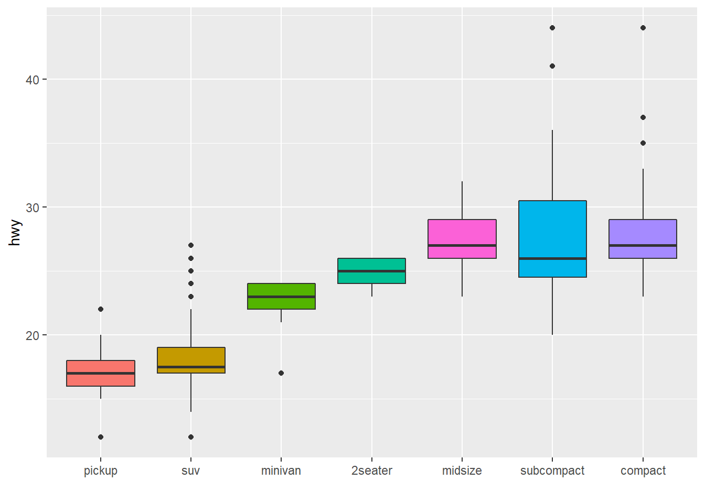
# Using number of observation per group
mpg %>%
mutate(class = fct_reorder(class, hwy, .fun='length' )) %>%
ggplot( aes(x=class, y=hwy, fill=class)) +
geom_boxplot() +
xlab("class") +
theme(legend.position="none") +
xlab("") +
xlab("")The last common operation is to provide a specific order to your levels, you can do so using the fct_relevel() function as follow:
# Reorder following a precise order
p <- data %>%
mutate(name = fct_relevel(name,
"north", "north-east", "east",
"south-east", "south", "south-west",
"west", "north-west")) %>%
ggplot( aes(x=name, y=val)) +
geom_bar(stat="identity") +
xlab("")
p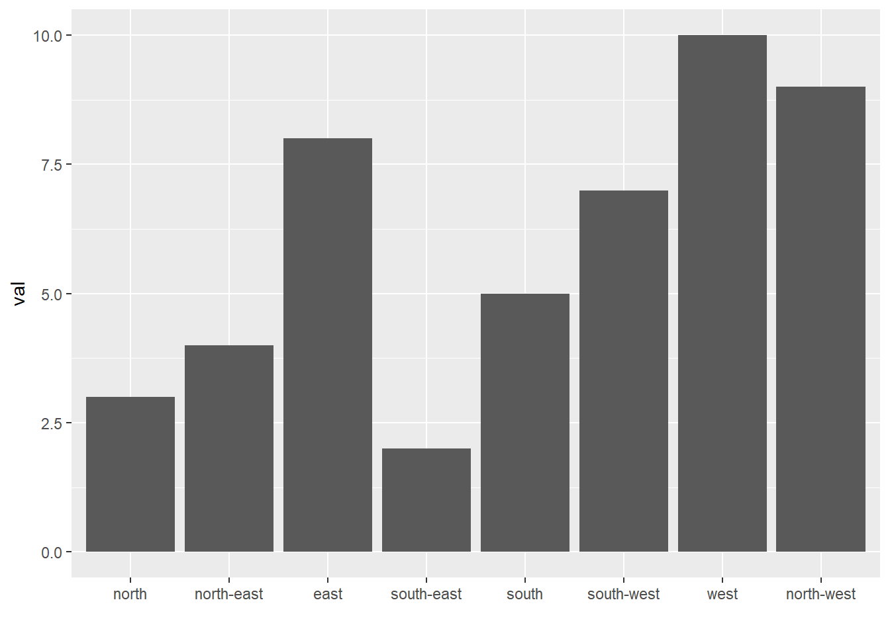
4.1.7 Method 2: Using dplyr Only
The mutate() function of dplyr allows to create a new variable or modify an existing one. It is possible to use it to recreate a factor with a specific order. Here are 2 examples:
- The first use a
rrange()to sort your data frame, and reorder the factor following this desired order. - The second specifies a custom order for the factor giving the levels one by one.
data %>%
arrange(val) %>% # First sort by val. This sort the dataframe but NOT the factor levels
mutate(name=factor(name, levels=name)) %>% # This trick update the factor levels
ggplot( aes(x=name, y=val)) +
geom_segment( aes(xend=name, yend=0)) +
geom_point( size=4, color="orange") +
coord_flip() +
theme_bw() +
xlab("")data %>%
arrange(val) %>%
mutate(name = factor(name, levels=c("north", "north-east", "east", "south-east", "south", "south-west", "west", "north-west"))) %>%
ggplot( aes(x=name, y=val)) +
geom_segment( aes(xend=name, yend=0)) +
geom_point( size=4, color="orange") +
theme_bw() +
xlab("")
4.1.8 Method 3: the reorder() Function of Base R
In case your an unconditional user of the good old R, here is how to control the order using the reorder() function inside a with() call:
# reorder is close to order, but is made to change the order of the factor levels.
mpg$class = with(mpg, reorder(class, hwy, median))
p <- mpg %>%
ggplot( aes(x=class, y=hwy, fill=class)) +
geom_violin() +
xlab("class") +
theme(legend.position="none") +
xlab("")
p
4.1.9 Barplot with Variable Width - Ggplot2
This section explains how to draw a barplot with variable bar width using R and ggplot2. It can be useful to represent the sample size available behind each group.
This example shows how to customize bar width in your barchart. It can be used to show the sample size hidden between each category.
It is not possible to draw that kind of chart using geom_bar() directly. You need to compute manually the position of each bar extremity using the cumsum() function, and plot the result using geom_rect().
Note: if you know what the distribution behind each bar is, dont do a barplot, show it.
# Load ggplot2
library(ggplot2)
library(hrbrthemes) # for style
# make data
data <- data.frame(
group=c("A ","B ","C ","D ") ,
value=c(33,62,56,67) ,
number_of_obs=c(100,500,459,342)
)
# Calculate the future positions on the x axis of each bar (left border, central position, right border)
data$right <- cumsum(data$number_of_obs) + 30*c(0:(nrow(data)-1))
data$left <- data$right - data$number_of_obs
# Plot
ggplot(data, aes(ymin = 0)) +
geom_rect(aes(xmin = left, xmax = right, ymax = value, colour = group, fill = group)) +
xlab("number of obs") +
ylab("value") +
theme_ipsum() +
theme(legend.position="none") 4.1.10 Barplot with Error Bars
This section describes how to add error bars on your barplot using R. Both ggplot2 and base R solutions are considered. A focus on different types of error bar calculation is made.
4.1.10.1 The geom_errorbar() Function
Error bars give a general idea of how precise a measurement is, or conversely, how far from the reported value the true (error free) value might be. If the value displayed on your barplot is the result of an aggregation (like the mean value of several data points), you may want to display error bars.
To understand how to build it, you first need to understand how to build a basic barplot with R. Then, you just it to add an extra layer using the geom_errorbar() function.
The function takes at least 3 arguments in its aesthetics:
yminandymax: position of the bottom and the top of the error bar respectivelyx: position on the X axis
Note: the lower and upper limits of your error bars must be computed before building the chart, and available in a column of the input data.
# Load ggplot2
library(ggplot2)
# create dummy data
data <- data.frame(
name=letters[1:5],
value=sample(seq(4,15),5),
sd=c(1,0.2,3,2,4)
)
# Most basic error bar
ggplot(data) +
geom_bar( aes(x=name, y=value), stat="identity", fill="skyblue", alpha=0.7) +
geom_errorbar( aes(x=name, ymin=value-sd, ymax=value+sd), width=0.4, colour="orange", alpha=0.9, size=1.3)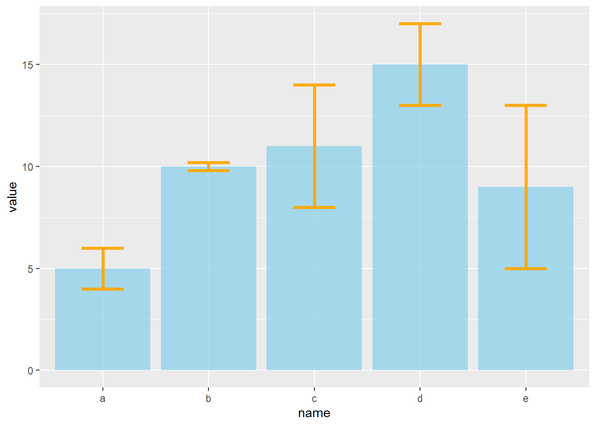
4.1.11 Customization
It is possible to change error bar types thanks to similar function: geom_crossbar(), geom_linerange() and geom_pointrange(). Those functions works basically the same as the most common geom_errorbar().
# Load ggplot2
library(ggplot2)
# create dummy data
data <- data.frame(
name=letters[1:5],
value=sample(seq(4,15),5),
sd=c(1,0.2,3,2,4)
)
# rectangle
ggplot(data) +
geom_bar( aes(x=name, y=value), stat="identity", fill="skyblue", alpha=0.5) +
geom_crossbar( aes(x=name, y=value, ymin=value-sd, ymax=value+sd), width=0.4, colour="orange", alpha=0.9, size=1.3)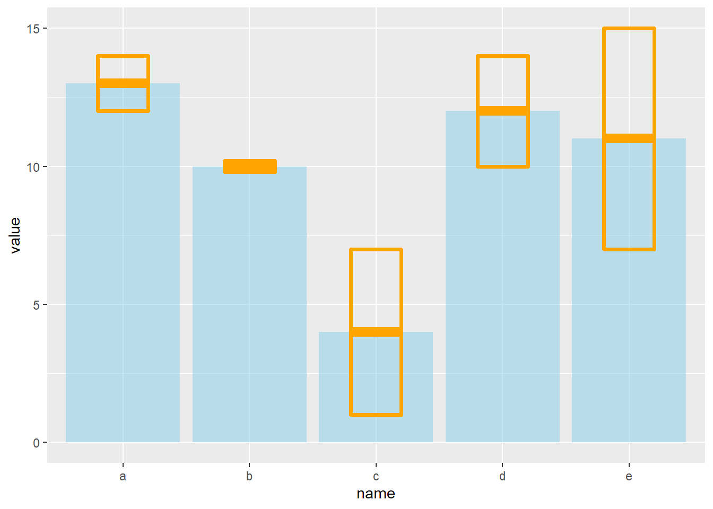
# line
ggplot(data) +
geom_bar( aes(x=name, y=value), stat="identity", fill="skyblue", alpha=0.5) +
geom_linerange( aes(x=name, ymin=value-sd, ymax=value+sd), colour="orange", alpha=0.9, size=1.3)# line + dot
ggplot(data) +
geom_bar( aes(x=name, y=value), stat="identity", fill="skyblue", alpha=0.5) +
geom_pointrange( aes(x=name, y=value, ymin=value-sd, ymax=value+sd), colour="orange", alpha=0.9, size=1.3)# horizontal
ggplot(data) +
geom_bar( aes(x=name, y=value), stat="identity", fill="skyblue", alpha=0.5) +
geom_errorbar( aes(x=name, ymin=value-sd, ymax=value+sd), width=0.4, colour="orange", alpha=0.9, size=1.3) +
coord_flip()
4.1.12 Basic R and the barplot() Function
Basic R can build quality barplots thanks to the barplot() function. Here is a list of examples guiding you through the most common customization you will need.
4.1.12.1 Most Basic Barplot
This section describes how to build a basic barplot with R, without any packages, using the barplot() function. In R, a barplot is computed using the barplot() function.
Here is the most basic example you can do. The input data is a data frame with 2 columns. value is used for bar height, name is used as category label.
# create dummy data
data <- data.frame(
name=letters[1:5],
value=sample(seq(4,15),5)
)
# The most basic barplot you can do:
barplot(height=data$value, names=data$name)4.1.13 Custom Color
Here are 2 examples showing how to custom the barplot color:
- Uniform color with col, asking one color only.
- Using a palette coming from
RColorBrewer. - Change border color with the border argument.
# create dummy data
data <- data.frame(
name=letters[1:5],
value=sample(seq(4,15),5)
)
# Uniform color
barplot(height=data$value, names=data$name, col=rgb(0.2,0.4,0.6,0.6) )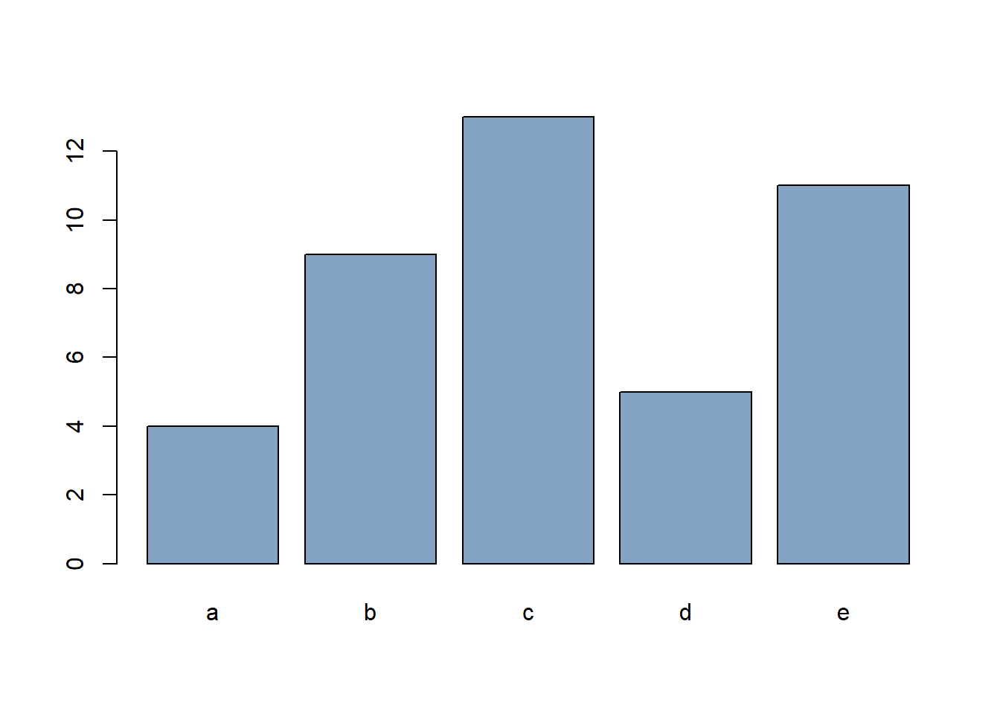
# Specific color for each bar? Use a well known palette
library(RColorBrewer)
coul <- brewer.pal(5, "Set2")
barplot(height=data$value, names=data$name, col=coul )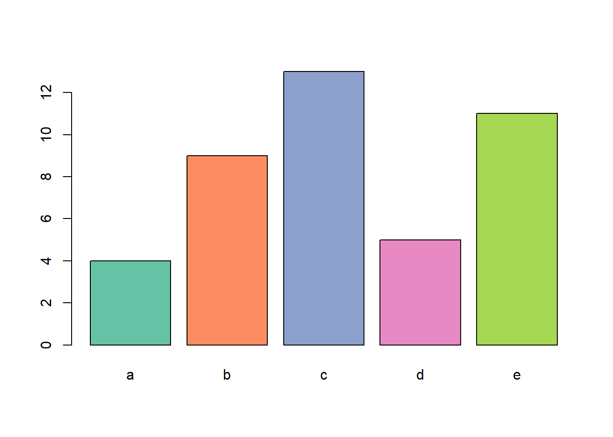
# Change border color
barplot(height=data$value, names=data$name, border="#69b3a2", col="white" )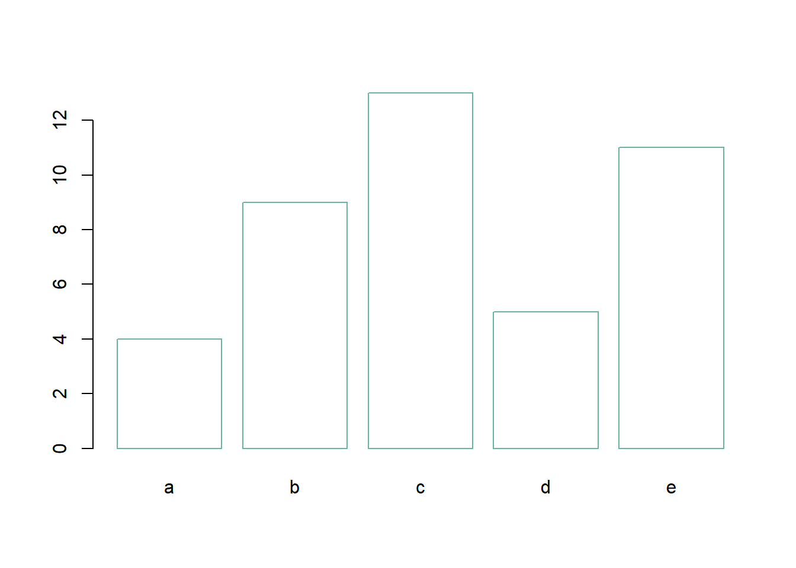
4.1.14 Title, Axis label, Custom Limits
Usual customizations with xlab, ylab, main and ylim.
# create dummy data
data <- data.frame(
name=letters[1:5],
value=sample(seq(4,15),5)
)
# Uniform color
barplot(height=data$value, names=data$name,
col=rgb(0.8,0.1,0.1,0.6),
xlab="categories",
ylab="values",
main="My title",
ylim=c(0,40)
)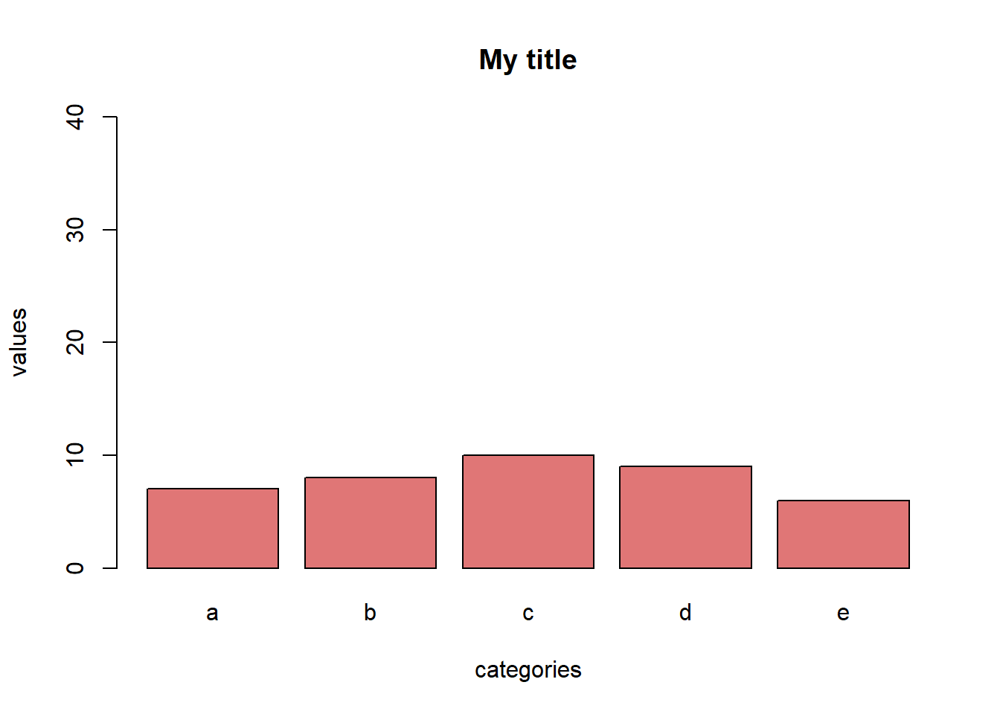
4.1.15 Horizontal Barplot
Usual customization with xlab, ylab, main and ylim.
# create dummy data
data <- data.frame(
name=letters[1:5],
value=sample(seq(4,15),5)
)
# Uniform color
barplot(height=data$value, names=data$name,
col="#69b3a2",
horiz=T, las=1
)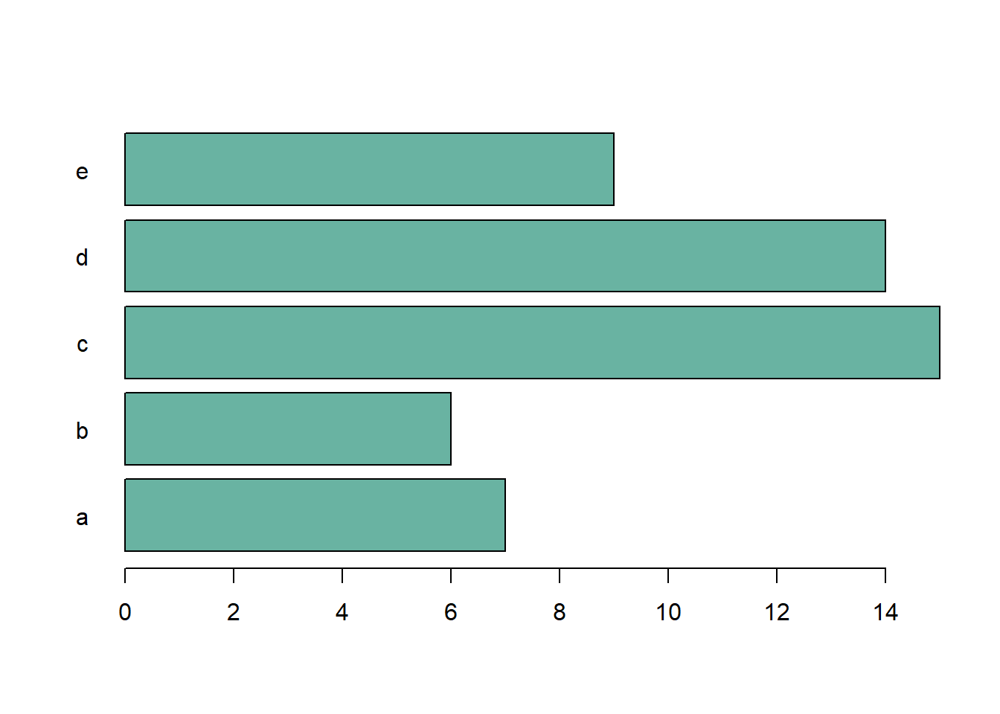
4.1.16 Bar Width & Space between Bars
It is possible to control the space between bars and the width of the bars using space and width.
Can be useful to represent the number of value behind each bar.
# create dummy data
data <- data.frame(
name=letters[1:5],
value=sample(seq(4,15),5)
)
# Control space:
barplot(height=data$value, names=data$name, col=rgb(0.2,0.4,0.6,0.6), space=c(0.1,0.2,3,1.5,0.3) )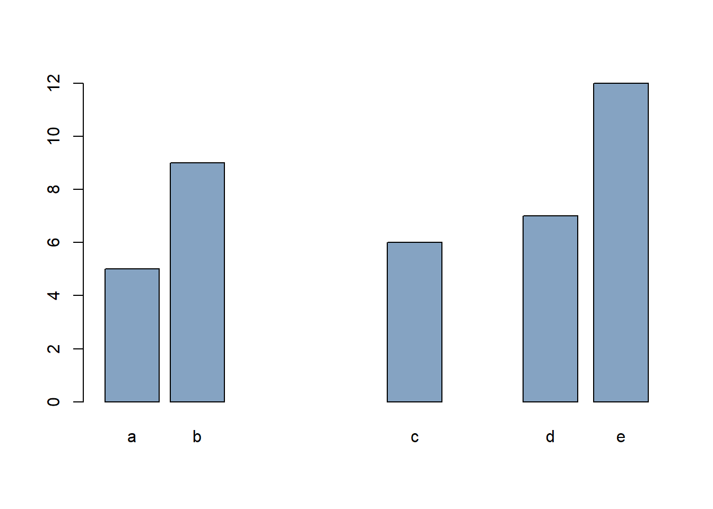
# Control width:
barplot(height=data$value, names=data$name, col=rgb(0.2,0.4,0.6,0.6), width=c(0.1,0.2,3,1.5,0.3) )4.1.17 Barplot Texture
Change bar texture with the density and angle arguments.
# create dummy data
data <- data.frame(
name=letters[1:5],
value=sample(seq(4,15),5)
)
# barplot
barplot( height=data$value, names=data$name , density=c(5,10,20,30,7) , angle=c(0,45,90,11,36) , col="brown" )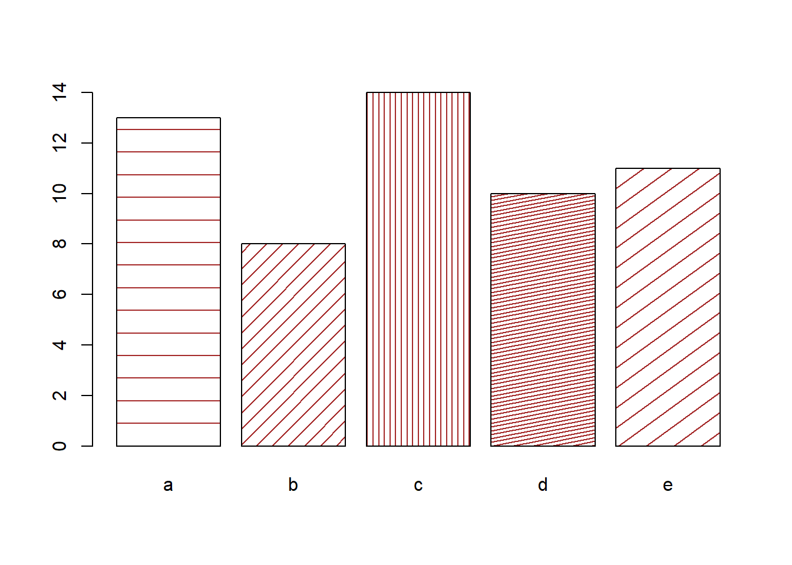
4.1.18 Advanced R Barplot Customization
Take your base R barplot to the next step: modify axis, label orientation, margins, and more.
4.1.18.1 Start Basic: barplot() Function
# create dummy data
data <- data.frame(
name=letters[1:5],
value=sample(seq(4,15),5)
)
# The most basic barplot you can do:
barplot(height=data$value, names=data$name, col="#69b3a2")4.1.19 Axis Labels Orientation with las()
The las argument allows to change the orientation of the axis labels:
- 0: always parallel to the axis
- 1: always horizontal
- 2: always perpendicular to the axis
- 3: always vertical.
This is specially helpful for horizontal bar chart.
# create dummy data
data <- data.frame(
name=letters[1:5],
value=sample(seq(4,15),5)
)
# The most basic barplot you can do:
barplot(height=data$value, names=data$name, col="#69b3a2", horiz=T , las=1)4.1.20 Change Group Labels with names.arg
Change the group names using the names.arg argument. The vector you provide must be the same length as the number of categories.
# create dummy data
data <- data.frame(
name=letters[1:5],
value=sample(seq(4,15),5)
)
# Uniform color
barplot(height=data$value, names.arg=c("group1","group2","group3","group4","group5"), col="#69b3a2")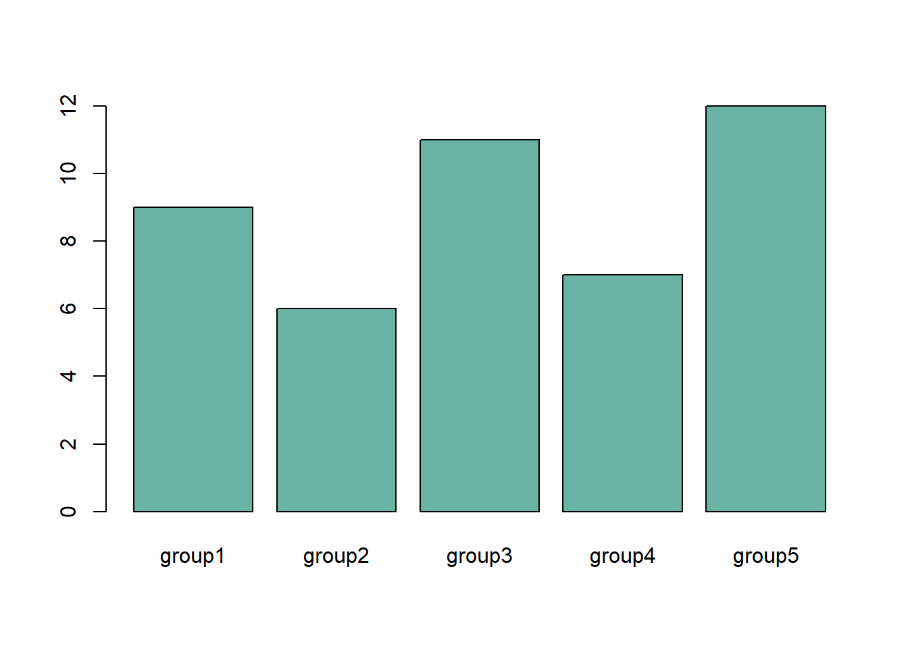
4.1.21 Axis Labels & Axis Title Style
Customize the labels:
- font.axis: font: 1: normal, 2: bold, 3: italic, 4: bold italic
- col.axis: color
- cex.axis: size
Customize axis title:
- font.lab
- col.lab
- cex.lab
# create dummy data
data <- data.frame(
name=letters[1:5],
value=sample(seq(4,15),5)
)
# Customize labels (left)
barplot(height=data$value, names=data$name,
names.arg=c("group1","group2","group3","group4","group5"),
font.axis=2,
col.axis="orange",
cex.axis=1.5
)# Customize title (right)
barplot(height=data$value, names=data$name,
xlab="category",
font.lab=2,
col.lab="orange",
cex.lab=2
)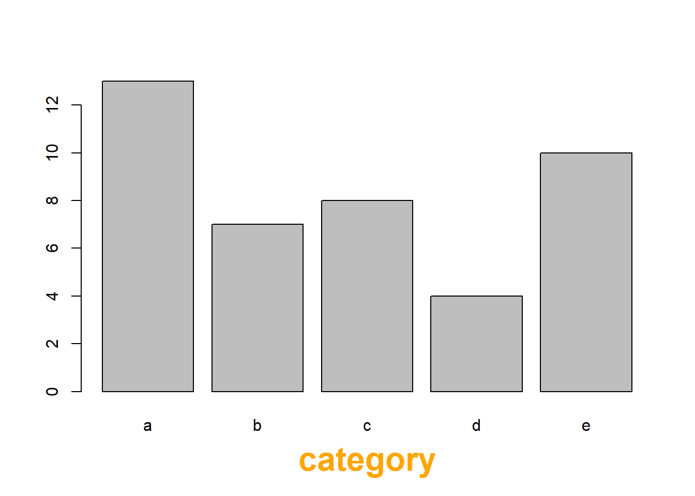
4.1.22 Increase Margin Size
If your group names are long, you need to:
- Rotate them to avoid overlapping. This is done with las
- Increase bottom margin size using the mar parameter of the
par()function. Four values are provided: bottom, left, top, right respectively.
Note: prefer a horizontal barplot in this case.
# create dummy data
data <- data.frame(
name=letters[1:5],
value=sample(seq(4,15),5)
)
# Increase margin size
par(mar=c(11,4,4,4))
# Uniform color
barplot(height=data$value,
col="#69b3a2",
names.arg=c("very long group name 1","very long group name 2","very long group name 3","very long group name 4","very long group name 5"),
las=2
)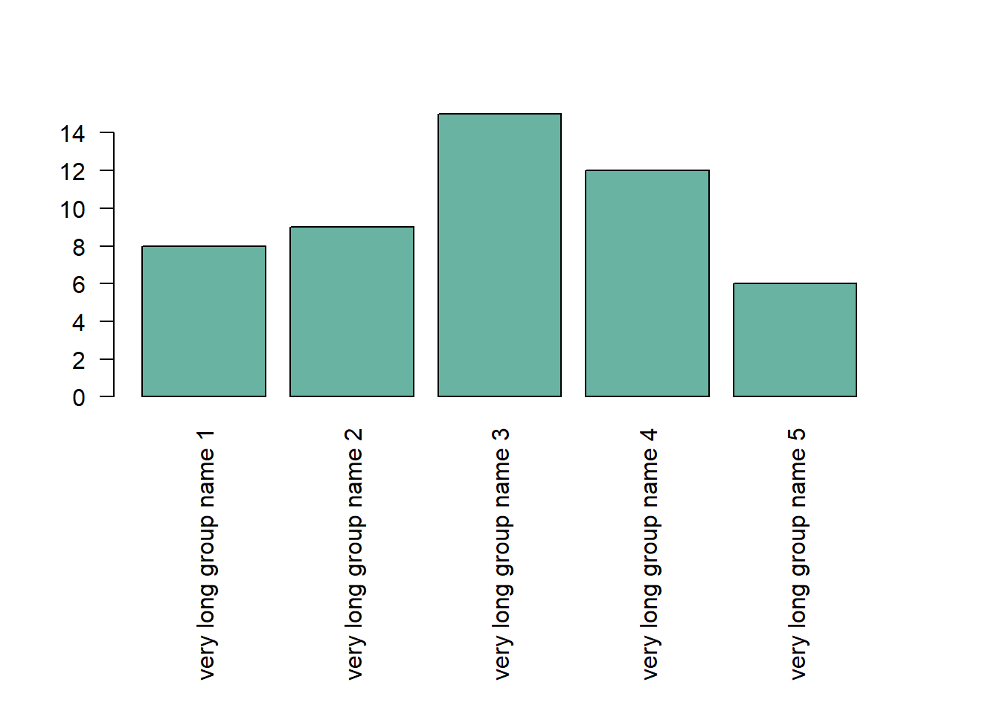
4.1.23 Barplot with Error Bars
This section describes how to add error bars on your barplot using R. Both ggplot2 and base R solutions are considered. A focus on different types of error bar calculation is made.
4.1.23.1 The geom_errorbar() Function
Error bars give a general idea of how precise a measurement is, or conversely, how far from the reported value the true (error free) value might be. If the value displayed on your barplot is the result of an aggregation (like the mean value of several data points), you may want to display error bars.
To understand how to build it, you first need to understand how to build a basic barplot with R. Then, you just it to add an extra layer using the geom_errorbar() function.
The function takes at least 3 arguments in its aesthetics:
- ymin and ymax: position of the bottom and the top of the error bar respectively
- x: position on the X axis
Note: the lower and upper limits of your error bars must be computed before building the chart, and available in a column of the input data.
# Load ggplot2
library(ggplot2)
# create dummy data
data <- data.frame(
name=letters[1:5],
value=sample(seq(4,15),5),
sd=c(1,0.2,3,2,4)
)
# Most basic error bar
ggplot(data) +
geom_bar( aes(x=name, y=value), stat="identity", fill="skyblue", alpha=0.7) +
geom_errorbar( aes(x=name, ymin=value-sd, ymax=value+sd), width=0.4, colour="orange", alpha=0.9, size=1.3)4.1.24 Customization
It is possible to change error bar types thanks to similar function: geom_crossbar(), geom_linerange() and geom_pointrange(). Those functions works basically the same as the most common geom_errorbar().
#Load ggplot2
library(ggplot2)
# create dummy data
data <- data.frame(
name=letters[1:5],
value=sample(seq(4,15),5),
sd=c(1,0.2,3,2,4)
)
# rectangle
ggplot(data) +
geom_bar( aes(x=name, y=value), stat="identity", fill="skyblue", alpha=0.5) +
geom_crossbar( aes(x=name, y=value, ymin=value-sd, ymax=value+sd), width=0.4, colour="orange", alpha=0.9, size=1.3)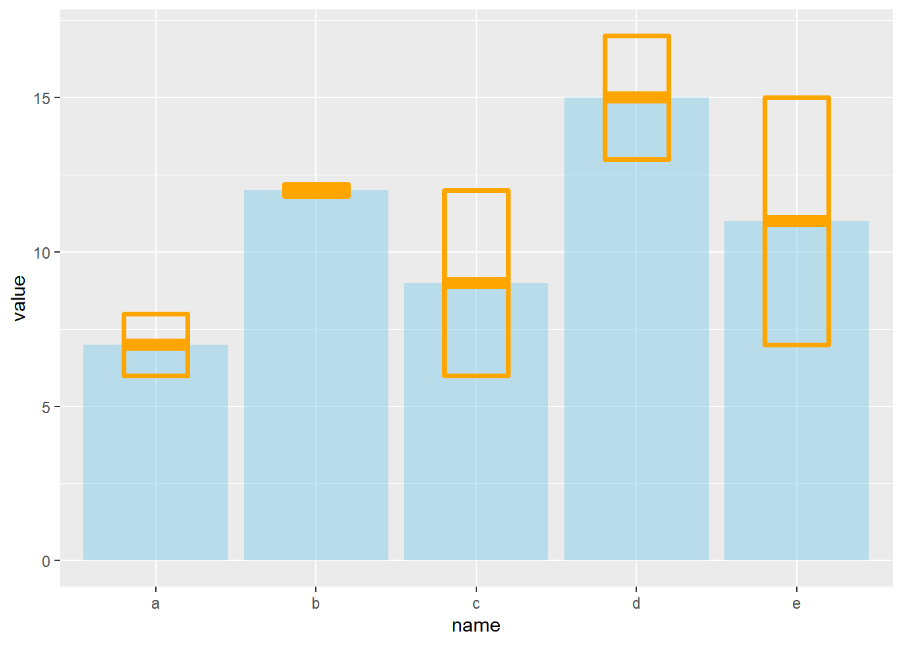
# line
ggplot(data) +
geom_bar( aes(x=name, y=value), stat="identity", fill="skyblue", alpha=0.5) +
geom_linerange( aes(x=name, ymin=value-sd, ymax=value+sd), colour="orange", alpha=0.9, size=1.3)# line + dot
ggplot(data) +
geom_bar( aes(x=name, y=value), stat="identity", fill="skyblue", alpha=0.5) +
geom_pointrange( aes(x=name, y=value, ymin=value-sd, ymax=value+sd), colour="orange", alpha=0.9, size=1.3)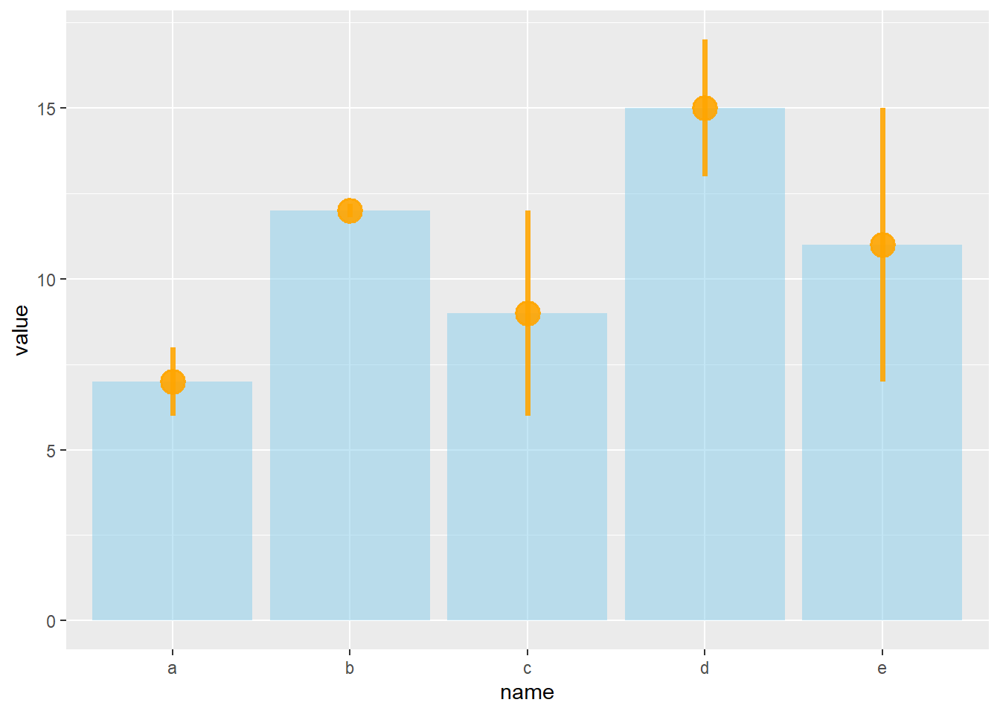
# horizontal
ggplot(data) +
geom_bar( aes(x=name, y=value), stat="identity", fill="skyblue", alpha=0.5) +
geom_errorbar( aes(x=name, ymin=value-sd, ymax=value+sd), width=0.4, colour="orange", alpha=0.9, size=1.3) +
coord_flip()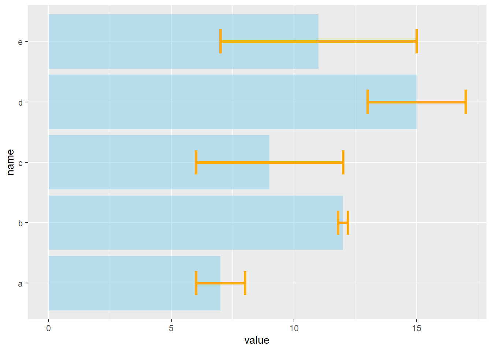
4.1.25 Standard Deviation, Standard Error or Confidence Interval?
Three different types of values are commonly used for error bars, sometimes without even specifying which one is used. It is important to understand how they are calculated, since they give very different results (see above). Lets compute them on a simple vector:
vec=c(1,3,5,9,38,7,2,4,9,19,19)4.1.25.1 Standard Deviation (SD)
It represents the amount of dispersion of the variable. Calculated as the root square of the variance:
sd <- sd(vec)
sd <- sqrt(var(vec))
sd4.1.25.2 Standard Error (SE)
It is the standard deviation of the vector sampling distribution. Calculated as the SD divided by the square root of the sample size. By construction, SE is smaller than SD. With a very big sample size, SE tends toward 0.
se = sd(vec) / sqrt(length(vec))
se4.1.25.3 Confidence Interval (CI)
This interval is defined so that there is a specified probability that a value lies within it. It is calculated as t * SE. Where t is the value of the Students t-distribution for a specific alpha. Its value is often rounded to 1.96 (its value with a big sample size). If the sample size is huge or the distribution not normal, it is better to calculate the CI using the bootstrap method, however.
alpha=0.05
t=qt((1-alpha)/2 + .5, length(vec)-1) # tend to 1.96 if sample size is big enough
CI=t*se
CIAfter this short introduction, here is how to compute these 3 values for each group of your dataset, and use them as error bars on your barplot. As you can see, the differences can greatly influence your conclusions.
# Load ggplot2
library(ggplot2)
library(dplyr)
# Data
data <- iris %>% dplyr::select(Species, Sepal.Length)
# Calculates mean, sd, se and IC
my_sum <- data %>%
group_by(Species) %>%
summarise(
n=n(),
mean=mean(Sepal.Length),
sd=sd(Sepal.Length)
) %>%
mutate( se=sd/sqrt(n)) %>%
mutate( ic=se * qt((1-0.05)/2 + .5, n-1))
# Standard deviation
ggplot(my_sum) +
geom_bar( aes(x=Species, y=mean), stat="identity", fill="forestgreen", alpha=0.5) +
geom_errorbar( aes(x=Species, ymin=mean-sd, ymax=mean+sd), width=0.4, colour="orange", alpha=0.9, size=1.5) +
ggtitle("using standard deviation")
# Standard Error
ggplot(my_sum) +
geom_bar( aes(x=Species, y=mean), stat="identity", fill="forestgreen", alpha=0.5) +
geom_errorbar( aes(x=Species, ymin=mean-se, ymax=mean+se), width=0.4, colour="orange", alpha=0.9, size=1.5) +
ggtitle("using standard error")# Confidence Interval
ggplot(my_sum) +
geom_bar( aes(x=Species, y=mean), stat="identity", fill="forestgreen", alpha=0.5) +
geom_errorbar( aes(x=Species, ymin=mean-ic, ymax=mean+ic), width=0.4, colour="orange", alpha=0.9, size=1.5) +
ggtitle("using confidence interval")4.1.26 Basic R: Use the arrows() Function
It is double to add error bars with base R only as well, but requires more work. In any case, everything relies on the arrows() function.
Lets build a dataset : height of 10 sorgho and poacee sample in 3 environmental conditions (A, B, C)
#Let's build a dataset : height of 10 sorgho and poacee sample in 3 environmental conditions (A, B, C)
data <- data.frame(
specie=c(rep("sorgho" , 10) , rep("poacee" , 10) ),
cond_A=rnorm(20,10,4),
cond_B=rnorm(20,8,3),
cond_C=rnorm(20,5,4)
)
#Let's calculate the average value for each condition and each specie with the *aggregate* function
bilan <- aggregate(cbind(cond_A,cond_B,cond_C)~specie , data=data , mean)
rownames(bilan) <- bilan[,1]
bilan <- as.matrix(bilan[,-1])
#Plot boundaries
lim <- 1.2*max(bilan)
#A function to add arrows on the chart
error.bar <- function(x, y, upper, lower=upper, length=0.1,...){
arrows(x,y+upper, x, y-lower, angle=90, code=3, length=length, ...)
}
#Then I calculate the standard deviation for each specie and condition :
stdev <- aggregate(cbind(cond_A,cond_B,cond_C)~specie , data=data , sd)
rownames(stdev) <- stdev[,1]
stdev <- as.matrix(stdev[,-1]) * 1.96 / 10
#I am ready to add the error bar on the plot using my "error bar" function !
ze_barplot <- barplot(bilan , beside=T , legend.text=T,col=c("blue" , "skyblue") , ylim=c(0,lim) , ylab="height")
error.bar(ze_barplot,bilan, stdev)4.1.27 Barplot with Number of Observation
A barplot with number of observation on top of bars, legend, ablines, increased margin and more.
This chart illustrates many tips you can apply to a base R barplot:
- Add abline with
abline() - Change axis labels orientation with
las() - Add text with
text() - Add a legend with
legend()
# Data
data <- data.frame(
name = c("DD","with himself","with DC","with Silur" ,"DC","with himself","with DD","with Silur" ,"Silur","with himself","with DD","with DC" ),
average = sample(seq(1,10) , 12 , replace=T),
number = sample(seq(4,39) , 12 , replace=T)
)
# Increase bottom margin
par(mar=c(6,4,4,4))
# Basic Barplot
my_bar <- barplot(data$average , border=F , names.arg=data$name ,
las=2 ,
col=c(rgb(0.3,0.1,0.4,0.6) , rgb(0.3,0.5,0.4,0.6) , rgb(0.3,0.9,0.4,0.6) , rgb(0.3,0.9,0.4,0.6)) ,
ylim=c(0,13) ,
main="" )
# Add abline
abline(v=c(4.9 , 9.7) , col="grey")
# Add the text
text(my_bar, data$average+0.4 , paste("n: ", data$number, sep="") ,cex=1)
#Legende
legend("topleft", legend = c("Alone","with Himself","With other genotype" ) ,
col = c(rgb(0.3,0.1,0.4,0.6) , rgb(0.3,0.5,0.4,0.6) , rgb(0.3,0.9,0.4,0.6) , rgb(0.3,0.9,0.4,0.6)) ,
bty = "n", pch=20 , pt.cex = 2, cex = 0.8, horiz = FALSE, inset = c(0.05, 0.05))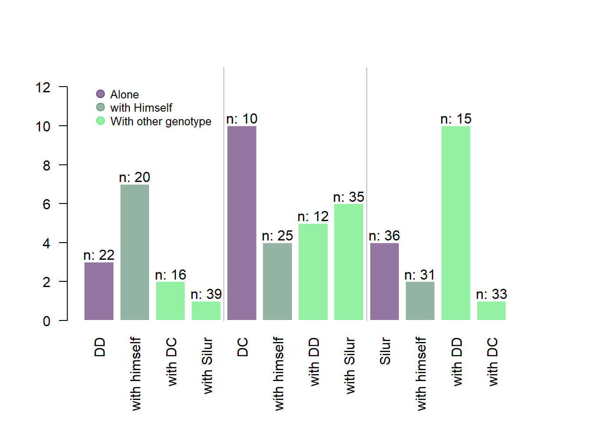
4.2 Radar Chart
A radar or spider or web chart is a two-dimensional chart type designed to plot one or more series of values over multiple quantitative variables. It has several downsides and should be used with care. In R, the fmsb library is the best tool to build it.
4.2.1 One Group Only - FMSB Library
The fmsb package allows to build radar chart in R. Next examples explain how to format your data to build a basic version, and what are the available option to customize the chart appearance.
4.2.1.1 Basic Radar Chart
How to build the most basic radar chart with R and the fmsb library: check several reproducible examples with explanation and R code.
4.2.1.2 Most basic radar chart with the fmsb package
Radar charts are also called Spider or Web or Polar charts. They are drawn in R using the fmsb library.
Input data format is very specific. Each row must be an entity. Each column is a quantitative variable. First 2 rows provide the min and the max that will be used for each variable.
Once you have this format, the radarchart() function makes all the job for you.
# Library
library(fmsb)
# Create data: note in High school for Jonathan:
data <- as.data.frame(matrix( sample( 2:20 , 10 , replace=T) , ncol=10))
colnames(data) <- c("math" , "english" , "biology" , "music" , "R-coding", "data-viz" , "french" , "physic", "statistic", "sport" )
# To use the fmsb package, I have to add 2 lines to the dataframe: the max and min of each topic to show on the plot!
data <- rbind(rep(20,10) , rep(0,10) , data)
# Check your data, it has to look like this!
# head(data)
# The default radar chart
radarchart(data)4.2.2 Customization
The radarchart() function offers several options to customize the chart:
Polygon features:
* pcol: line color
* pfcol: fill color
* plwd: line width
Grid features:
* cglcol: color of the net
* cglty: net line type (see possibilities)
* axislabcol: color of axis labels
* caxislabels: vector of axis labels to display
* cglwd: net width
Labels:
* vlcex: group labels size
# Library
library(fmsb)
# Create data: note in High school for Jonathan:
data <- as.data.frame(matrix( sample( 2:20 , 10 , replace=T) , ncol=10))
colnames(data) <- c("math" , "english" , "biology" , "music" , "R-coding", "data-viz" , "french" , "physic", "statistic", "sport" )
# To use the fmsb package, I have to add 2 lines to the dataframe: the max and min of each topic to show on the plot!
data <- rbind(rep(20,10) , rep(0,10) , data)
# Check your data, it has to look like this!
# head(data)
# Custom the radarChart !
radarchart( data , axistype=1 ,
#custom polygon
pcol=rgb(0.2,0.5,0.5,0.9) , pfcol=rgb(0.2,0.5,0.5,0.5) , plwd=4 ,
#custom the grid
cglcol="grey", cglty=1, axislabcol="grey", caxislabels=seq(0,20,5), cglwd=0.8,
#custom labels
vlcex=0.8
)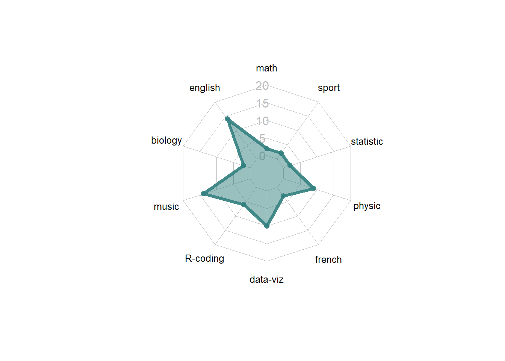
4.2.3 Several Groups
It is acceptable to show several groups on the same spider chart, still using the fmsb package. The examples below will guide you through this process. But keep in mind that displaying more than 2 or 3 groups will result in a cluttered and unreadable figure.
4.2.3.1 Radar Chart with Several Individuals
It is possible to display several groups on the same radar chart. This section describes how to draw it with R and the fmsb library.
4.2.3.2 Multi-Group Spider Chart - No Options
If youre using the fmsb package for the first time, have a look to the most basic radar chart first, it explains how the data must be formatted for the radarchart() function.
If you have several individuals, the code looks pretty much the same as shown below.
Note: Dont show more that 2 or 3 groups on the same web chart, it would make it unreadable. Read more about radar chart caveats.
# Library
library(fmsb)
# Create data: note in High school for several students
set.seed(99)
data <- as.data.frame(matrix( sample( 0:20 , 15 , replace=F) , ncol=5))
colnames(data) <- c("math" , "english" , "biology" , "music" , "R-coding" )
rownames(data) <- paste("mister" , letters[1:3] , sep="-")
# To use the fmsb package, I have to add 2 lines to the dataframe: the max and min of each variable to show on the plot!
data <- rbind(rep(20,5) , rep(0,5) , data)
# plot with default options:
radarchart(data)4.2.4 Customization
The radarchart() function offers several options to customize the chart:
Polygon features:
* pcol: line color
* pfcol: fill color
* plwd: line width
Grid features:
* cglcol: color of the net
* cglty: net line type (see possibilities)
* axislabcol: color of axis labels
* caxislabels: vector of axis labels to display
* cglwd: net width
Labels:
* vlcex: group labels size
# Library
library(fmsb)
# Create data: note in High school for several students
set.seed(99)
data <- as.data.frame(matrix( sample( 0:20 , 15 , replace=F) , ncol=5))
colnames(data) <- c("math" , "english" , "biology" , "music" , "R-coding" )
rownames(data) <- paste("mister" , letters[1:3] , sep="-")
# To use the fmsb package, I have to add 2 lines to the dataframe: the max and min of each variable to show on the plot!
data <- rbind(rep(20,5) , rep(0,5) , data)
# Color vector
colors_border=c( rgb(0.2,0.5,0.5,0.9), rgb(0.8,0.2,0.5,0.9) , rgb(0.7,0.5,0.1,0.9) )
colors_in=c( rgb(0.2,0.5,0.5,0.4), rgb(0.8,0.2,0.5,0.4) , rgb(0.7,0.5,0.1,0.4) )
# plot with default options:
radarchart( data , axistype=1 ,
#custom polygon
pcol=colors_border , pfcol=colors_in , plwd=4 , plty=1,
#custom the grid
cglcol="grey", cglty=1, axislabcol="grey", caxislabels=seq(0,20,5), cglwd=0.8,
#custom labels
vlcex=0.8
)
# Add a legend
legend(x=0.7, y=1, legend = rownames(data[-c(1,2),]), bty = "n", pch=20 , col=colors_in , text.col = "grey", cex=1.2, pt.cex=3)4.2.5 About Axis Limits
In the previous examples, axis limits were set in the 2 first rows of the input dataset.
If you do not specify these values, the axis limits will be computed automatically, as shown below.
# Library
library(fmsb)
# Create data: note in High school for several students
set.seed(99)
data <- as.data.frame(matrix( sample( 0:20 , 15 , replace=F) , ncol=5))
colnames(data) <- c("math" , "english" , "biology" , "music" , "R-coding" )
rownames(data) <- paste("mister" , letters[1:3] , sep="-")
# To use the fmsb package, I have to add 2 lines to the dataframe: the max and min of each variable to show on the plot!
data <- rbind(rep(20,5) , rep(0,5) , data)
# Set graphic colors
library(RColorBrewer)
coul <- brewer.pal(3, "BuPu")
colors_border <- coul
library(scales)
colors_in <- alpha(coul,0.3)
# If you remove the 2 first lines, the function compute the max and min of each variable with the available data:
radarchart( data[-c(1,2),] , axistype=0 , maxmin=F,
#custom polygon
pcol=colors_border , pfcol=colors_in , plwd=4 , plty=1,
#custom the grid
cglcol="grey", cglty=1, axislabcol="black", cglwd=0.8,
#custom labels
vlcex=0.8
)
# Add a legend
legend(x=0.7, y=1, legend = rownames(data[-c(1,2),]), bty = "n", pch=20 , col=colors_in , text.col = "grey", cex=1.2, pt.cex=3)4.2.5.1 Warning
There is a lot of criticism going around spider chart. Before using it in a project, you probably want to learn more about it.
4.3 Wordcloud
A wordcloud (or tag cloud) is a visual representation of text data. Tags are usually single words, and the importance of each tag is shown with font size or color. In R, two packages allow to create wordclouds: Wordcloud and Wordcloud2.
4.3.1 wordcloud2
The Wordcloud2 package by Chiffon Lang is probably the best way to build wordclouds with R. Note that it is a html widget. Thus the default output format is HTML. If you need a PNG or PDF, read this section.
4.3.2 The Wordcloud2 Library
This section explains how to draw wordclouds with R and the wordcloud2 package. It provides several reproducible examples with explanation and R code. It is largely inspired from the very well done vignette.
4.3.2.1 Most Basic with wordcloud2()
This is the most basic barplot you can build with the wordcloud2 library, using its wordcloud2() function. Note:
data: is a data frame including word and freq in each column.size: is the font size, default is 1.
# library
library(wordcloud2)
# have a look to the example dataset
head(demoFreq)
# Basic plot
wordcloud2(data=demoFreq, size=1.6)
4.3.3 Color & Background Color
It is possible to change the word color using the color argument. You can provide a vector of color, or use random-dark or random-light. You can also customize the background color with backgroundColor.
# library
library(wordcloud2)
# Gives a proposed palette
wordcloud2(demoFreq, size=1.6, color='random-dark')
# or a vector of colors. vector must be same length than input data
wordcloud2(demoFreq, size=1.6, color=rep_len( c("green","blue"), nrow(demoFreq) ) )
# Change the background color
wordcloud2(demoFreq, size=1.6, color='random-light', backgroundColor="black")4.3.4 Shape
You can custom the wordcloud shape using the shape argument. Available shapes are:
circlecardioiddiamondtriangle-forwardtrianglepentagonstar
You can also use an image like this one as a mask.
{kind=link}
# library
library(wordcloud2)
# Change the shape:
wordcloud2(demoFreq, size = 0.7, shape = 'star')
# Change the shape using your image
wordcloud2(demoFreq, figPath = "~/Desktop/R-graph-gallery/img/other/peaceAndLove.jpg", size = 1.5, color = "skyblue", backgroundColor="black")
4.3.5 Word Orientation
Rotate words with 3 arguments: minRotation, maxRotation and rotateRatio.
# library
library(wordcloud2)
# wordcloud
wordcloud2(demoFreq, size = 2.3, minRotation = -pi/6, maxRotation = -pi/6, rotateRatio = 1)
4.3.6 Chinese Version
Chinese version. Comes from the doc.
# library
library(wordcloud2)
# wordcloud
wordcloud2(demoFreqC, size = 2, fontFamily = "????????????", color = "random-light", backgroundColor = "grey")
4.3.7 Use Letter or Text as Shape
The letterCloud function allows to use a letter or a word as a mask for the wordcloud:
# library
library(wordcloud2)
letterCloud( demoFreq, word = "R", color='random-light' , backgroundColor="black")
letterCloud( demoFreq, word = "PEACE", color="white", backgroundColor="pink")
4.3.8 Export the Wordcloud
Wordcloud2 is a html widget. It means your wordcloud will be output in a HTML format.
You can export it as a png image using rstudio, or using the webshot library as follow:
# load wordcloud2
library(wordcloud2)
# install webshot
library(webshot)
webshot::install_phantomjs()
# Make the graph
my_graph <- wordcloud2(demoFreq, size=1.5)
# save it in html
library("htmlwidgets")
saveWidget(my_graph,"tmp.html",selfcontained = F)
# and in png or pdf
webshot("tmp.html","fig_1.pdf", delay =5, vwidth = 480, vheight=480)4.3.9 Basic wordcloud in R
A wordcloud is a visual representation of text data. Learn how to build a basic wordcloud with R and the wordcloud library, with reproducible code provided.
Wordclouds can be very useful to highlight the main topics in text.
In R, it can be built using the wordcloud package as described below.
Note: the wordcloud2 package allows more customizations and is extensively described here.
Note: this online tool is a good non-programming alternative.
#Charge the wordcloud library
library(wordcloud)
#Create a list of words (Random words concerning my work)
a <- c("Cereal","WSSMV","SBCMV","Experimentation","Talk","Conference","Writing",
"Publication","Analysis","Bioinformatics","Science","Statistics","Data",
"Programming","Wheat","Virus","Genotyping","Work","Fun","Surfing","R", "R",
"Data-Viz","Python","Linux","Programming","Graph Gallery","Biologie", "Resistance",
"Computing","Data-Science","Reproductible","GitHub","Script")
#I give a frequency to each word of this list
b <- sample(seq(0,1,0.01) , length(a) , replace=TRUE)
#The package will automatically make the wordcloud ! (I add a black background)
par(bg="black")
wordcloud(a , b , col=terrain.colors(length(a) , alpha=0.9) , rot.per=0.3 )
4.3.10 Text mining and wordcloud with R
This section describes a text mining project done with R, showing results as wordclouds. It was used for a document classification challenge. R code is provided.
These graphics come from the blog of Benjamin Tovarcis. He answered a machine learning challenge at Hackerrank which consisted on document classification.
The dataset consists of 5485 documents distributed among 8 different classes, perfect to learn text mining (with the tm package) and compute wordclouds (using the wordcloud package).
If you need a more basic approach of wordcloud, have a look to the graph #15. Have a look to the blog of Benjamin for more explanations and thanks to him for his contribution !
# Packages
library(reshape)
library(tm)
library(wordcloud)
# --------------------------------------------------------------------------------------------------------------------------------------------------------------------------------
# -- STEP 1 : GET THE DATA
# A dataset with 5485 lines, each line has several words.
dataset=read.delim("https://raw.githubusercontent.com/TATABOX42/text-mining-in-r/master/dataset.txt", header=FALSE)
# The labels of each line of the dataset file
dataset_labels <- read.delim("https://raw.githubusercontent.com/TATABOX42/text-mining-in-r/master/labels.txt",header=FALSE)
dataset_labels <- dataset_labels[,1]
dataset_labels_p <- paste("class",dataset_labels,sep="_")
unique_labels <- unique(dataset_labels_p)
# merge documents that match certain class into a list object
dataset_s <- sapply(unique_labels,function(label) list( dataset[dataset_labels_p %in% label,1] ) )
# --------------------------------------------------------------------------------------------------------------------------------------------------------------------------------
# -- STEP2 : COMPUTE DOCUMENT CORPUS TO MAKE TEXT MINING
# convert each list content into a corpus
dataset_corpus <- lapply(dataset_s, function(x) Corpus(VectorSource( toString(x) )))
# merge all documents into one single corpus
dataset_corpus_all <- dataset_corpus[[1]]
for (i in 2:length(unique_labels)) { dataset_corpus_all <- c(dataset_corpus_all,dataset_corpus[[i]]) }
# remove punctuation, numbers and stopwords
dataset_corpus_all <- tm_map(dataset_corpus_all, removePunctuation)
dataset_corpus_all <- tm_map(dataset_corpus_all, removeNumbers)
dataset_corpus_all <- tm_map(dataset_corpus_all, function(x) removeWords(x,stopwords("english")))
#remove some unintersting words
words_to_remove <- c("said","from","what","told","over","more","other","have","last","with","this","that","such","when","been","says","will","also","where","why","would","today")
dataset_corpus_all <- tm_map(dataset_corpus_all, removeWords, words_to_remove)
# compute term matrix & convert to matrix class --> you get a table summarizing the occurence of each word in each class.
document_tm <- TermDocumentMatrix(dataset_corpus_all)
document_tm_mat <- as.matrix(document_tm)
colnames(document_tm_mat) <- unique_labels
document_tm_clean <- removeSparseTerms(document_tm, 0.8)
document_tm_clean_mat <- as.matrix(document_tm_clean)
colnames(document_tm_clean_mat) <- unique_labels
# remove words in term matrix with length < 4
index <- as.logical(sapply(rownames(document_tm_clean_mat), function(x) (nchar(x)>3) ))
document_tm_clean_mat_s <- document_tm_clean_mat[index,]
# Have a look to the matrix you are going to use for wordcloud !
head(document_tm_clean_mat_s)
# --------------------------------------------------------------------------------------------------------------------------------------------------------------------------------
# -- STEP 3 : make the graphics !
# Graph 1 : first top 500 discriminant words
png("#102_1_comparison_cloud_top_500_words.png", width = 480, height = 480)
comparison.cloud(document_tm_clean_mat_s, max.words=500, random.order=FALSE,c(4,0.4), title.size=1.4)
dev.off()
# Graph 2 : first top 2000 discriminant words
png("#102_1_comparison_cloud_top_2000_words.png", width = 480, height = 480)
comparison.cloud(document_tm_clean_mat_s,max.words=2000,random.order=FALSE,c(4,0.4), title.size=1.4)
dev.off()
# Graph 3: commonality word cloud : first top 2000 common words across classes
png("#103_commonality_wordcloud.png", width = 480, height = 480)
commonality.cloud(document_tm_clean_mat_s, max.words=2000, random.order=FALSE)
dev.off()
4.4 Parallel Coordinates Chart
This is the Parallel Coordinates chart section of the gallery. If you want to know more about this kind of chart, visit data-to-viz.com. If youre looking for a simple way to implement it in d3.js, pick an example below.
4.4.0.1 Step by Step - The ggally Library
The ggally package is a ggplot2 extension that allows to build parallel coordinates charts thanks to the parcoord() function. It allows to beneficiate the grammar of graphics and all the usual ggplot2 customization.
4.4.1 Parallel Coordinates Chart with ggally
ggally is a ggplot2 extension. It allows to build parallel coordinates charts thanks to the ggparcoord() function. Check several reproducible examples in this section.
4.4.1.1 Most Basic
This is the most basic parallel coordinates chart you can build with R, the ggally packages and its ggparcoord() function.
The input dataset must be a data frame with several numeric variables, each being used as a vertical axis on the chart. Columns number of these variables are specified in the columns argument of the function.
Note: Categoric variable is used to color lines, as specified in the groupColumn variable.
# Libraries
library(GGally)
# Data set is provided by R natively
data <- iris
# Plot
ggparcoord(data,
columns = 1:4, groupColumn = 5
)
4.4.2 Custom Color, Theme, General Appearance
This is pretty much the same chart as the previous one, except for the following customizations:
- Color palette is improved thanks to the
viridispackage. - Title is added with
title, and customized in theme. - Dots are added with
showPoints. - Transparency is applied to lines with
alphaLines. theme_ipsum()is used for the general appearance.
# Libraries
library(hrbrthemes)
library(GGally)
library(viridis)
# Data set is provided by R natively
data <- iris
# Plot
ggparcoord(data,
columns = 1:4, groupColumn = 5, order = "anyClass",
showPoints = TRUE,
title = "Parallel Coordinate Plot for the Iris Data",
alphaLines = 0.3
) +
scale_color_viridis(discrete=TRUE) +
theme_ipsum()+
theme(
plot.title = element_text(size=10)
)
4.4.3 Scaling
Scaling transforms the raw data to a new scale that is common with other variables. It is a crucial step to compare variables that do not have the same unit, but can also help otherwise as shown in the example below.
The ggally package offers a scale argument. Four possible options are applied on the same dataset below:
globalminmax: No scalinguniminmax: Standardize to Min = 0 and Max = 1std:Normalize univariately (substract mean & divide by sd)center: Standardize and center variables
ggparcoord(data,
columns = 1:4, groupColumn = 5, order = "anyClass",
scale="globalminmax",
showPoints = TRUE,
title = "No scaling",
alphaLines = 0.3
) +
scale_color_viridis(discrete=TRUE) +
theme_ipsum()+
theme(
legend.position="none",
plot.title = element_text(size=13)
) +
xlab("")
ggparcoord(data,
columns = 1:4, groupColumn = 5, order = "anyClass",
scale="uniminmax",
showPoints = TRUE,
title = "Standardize to Min = 0 and Max = 1",
alphaLines = 0.3
) +
scale_color_viridis(discrete=TRUE) +
theme_ipsum()+
theme(
legend.position="none",
plot.title = element_text(size=13)
) +
xlab("")
ggparcoord(data,
columns = 1:4, groupColumn = 5, order = "anyClass",
scale="std",
showPoints = TRUE,
title = "Normalize univariately (substract mean & divide by sd)",
alphaLines = 0.3
) +
scale_color_viridis(discrete=TRUE) +
theme_ipsum()+
theme(
legend.position="none",
plot.title = element_text(size=13)
) +
xlab("")
ggparcoord(data,
columns = 1:4, groupColumn = 5, order = "anyClass",
scale="center",
showPoints = TRUE,
title = "Standardize and center variables",
alphaLines = 0.3
) +
scale_color_viridis(discrete=TRUE) +
theme_ipsum()+
theme(
legend.position="none",
plot.title = element_text(size=13)
) +
xlab("")
4.4.4 Highlight a Group
Data visualization aims to highlight a story in the data. If you are interested in a specific group, you can highlight it as follow:
# Libraries
library(GGally)
library(dplyr)
# Data set is provided by R natively
data <- iris
# Plot
data %>%
arrange(desc(Species)) %>%
ggparcoord(
columns = 1:4, groupColumn = 5, order = "anyClass",
showPoints = TRUE,
title = "Original",
alphaLines = 1
) +
scale_color_manual(values=c( "#69b3a2", "#E8E8E8", "#E8E8E8") ) +
theme_ipsum()+
theme(
legend.position="Default",
plot.title = element_text(size=10)
) +
xlab("")
4.4.5 Parallel Chart with the MASS Library
This section explains how to build a parallel coordinate chart with R and the MASS library. Note that using ggplot2 is probably a better option.
4.4.5.1 The parcoord() Function of the MASS Library
The MASS library provides the parcoord() function that automatically builds parallel coordinates chart. The input dataset must be a data frame composed by numeric variables only. Each variable will be used to build one vertical axis of the chart.
# You need the MASS library
library(MASS)
# Vector color
my_colors <- colors()[as.numeric(iris$Species)*11]
# Make the graph !
parcoord(iris[,c(1:4)] , col= my_colors )
4.4.6 Reorder Variables
It is important to find the best variable order in your parallel coordinates chart. To change it, just change the order in the input dataset.
Note: the RColorBrewer package is used to generate a nice and reliable color palette.
# You need the MASS library
library(MASS)
# Vector color
library(RColorBrewer)
palette <- brewer.pal(3, "Set1")
my_colors <- palette[as.numeric(iris$Species)]
# Make the graph !
parcoord(iris[,c(1,3,4,2)] , col= my_colors )
4.4.7 Highlight a Group
Data visualization aims to highlight a story in the data. If you are interested in a specific group, you can highlight it as follow:
# You need the MASS library
library(MASS)
# Let's use the Iris dataset as an example
data(iris)
# Vector color: red if Setosa, grey otherwise.
isSetosa <- ifelse(iris$Species=="setosa","red","grey")
# Make the graph !
parcoord(iris[,c(1,3,4,2)] , col=isSetosa )
4.5 Lollipop Plot
A lollipop plot is basically a barplot, where the bar is transformed in a line and a dot. It shows the relationship between a numeric and a categorical variable. Lollipop charts can be created using ggplot2: the trick is to combine geom_point() for the dots with geom_segment() for the stems. See this basic example to see how to proceed.
4.5.0.1 GGPLOT2
Lollipop charts can be created using ggplot2: the trick is to combine geom_point() for the dots with geom_segment() for the stems. See this basic example to see how to proceed.
4.5.1 Most Basic Lollipop Plot
How to build a very basic lollipop chart with R and ggplot2. This section how to use geom_point() and geom_segment() based on different input formats.
4.5.1.1 From 2 Numeric Variables
A lollipop plot is very close from both scatterplots and barplots.
Thus, 2 types of input format work to build it:
- 2 numeric values like for a scatterplot
- one numeric and one categorical variable like for the barplot.
In any case, a lollipop is built using geom_point() for the circle, and geom_segment() for the stem.
# Libraries
library(ggplot2)
# Create data
data <- data.frame(x=seq(1,30), y=abs(rnorm(30)))
# Plot
ggplot(data, aes(x=x, y=y)) +
geom_point() +
geom_segment( aes(x=x, xend=x, y=0, yend=y))4.5.2 From 1 Numeric and 1 Categorical Variable
The code works pretty much the same way, but it is important to note that the X axis can represent a categorical variable as well. In this case, the lollipop chart is a good replacement of the barplot.
# Libraries
library(ggplot2)
# Create data
data <- data.frame(
x=LETTERS[1:26],
y=abs(rnorm(26))
)
# Plot
ggplot(data, aes(x=x, y=y)) +
geom_point() +
geom_segment( aes(x=x, xend=x, y=0, yend=y))
4.5.3 Custom Lollipop Chart
A lollipop chart is constituted of a circle (made with geom_point()) and a segment (made with geom_segment()). This page explains how to customize the chart appearance with R and ggplot2.
4.5.3.1 Marker
A lollipop plot is constituted of a marker and a stem. You can customize the marker as usual with ggplot2:
size,coloralpha: transparencyshape: see list of available shape herestrokeandfill: only for shapes that have stroke, like the 21
# Library
library(tidyverse)
# Create data
data <- data.frame(
x=LETTERS[1:26],
y=abs(rnorm(26))
)
# plot
ggplot(data, aes(x=x, y=y)) +
geom_segment( aes(x=x, xend=x, y=0, yend=y)) +
geom_point( size=5, color="red", fill=alpha("orange", 0.3), alpha=0.7, shape=21, stroke=2) 4.5.4 Stem
The stem is built using geom_segment() and can be customized as well:
size,colorlinetype: can be an integer (see list), a word likedotted,dashed,dotdashand more (typehelp(linetype))
# Libraries
library(ggplot2)
# Create data
data <- data.frame(
x=LETTERS[1:26],
y=abs(rnorm(26))
)
# Plot
ggplot(data, aes(x=x, y=y)) +
geom_segment( aes(x=x, xend=x, y=0, yend=y) , size=1, color="blue", linetype="dotdash" ) +
geom_point()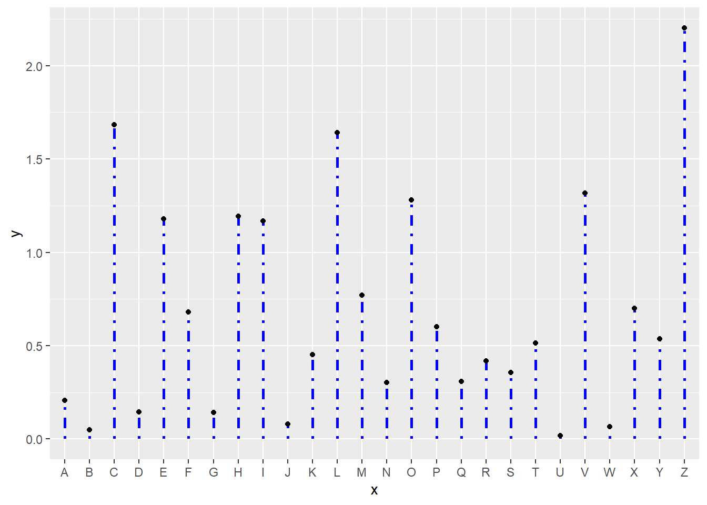
4.5.5 General Appearance with theme()
As usual, you can customize the general appearance of the chart using the theme() function.
Note: another solution is to use the pre-built theme_ipsum() offered in the hrbrthemes package.
# Create data
data <- data.frame(
x=LETTERS[1:26],
y=abs(rnorm(26))
)
# Plot
ggplot(data, aes(x=x, y=y)) +
geom_segment( aes(x=x, xend=x, y=0, yend=y), color="grey") +
geom_point( color="orange", size=4) +
theme_light() +
theme(
panel.grid.major.x = element_blank(),
panel.border = element_blank(),
axis.ticks.x = element_blank()
) +
xlab("") +
ylab("Value of Y")
4.5.6 Horizontal Version
It is pretty straightforward to flip the chart using the coord_flip() function.
It makes sense to do so if you have long labels they will be much easier to read.
# Libraries
library(ggplot2)
# Create data
data <- data.frame(
x=LETTERS[1:26],
y=abs(rnorm(26))
)
# Horizontal version
ggplot(data, aes(x=x, y=y)) +
geom_segment( aes(x=x, xend=x, y=0, yend=y), color="skyblue") +
geom_point( color="blue", size=4, alpha=0.6) +
theme_light() +
coord_flip() +
theme(
panel.grid.major.y = element_blank(),
panel.border = element_blank(),
axis.ticks.y = element_blank()
)4.5.7 Baseline
Lastly, you can easily change the baseline of the chart. It gives more insight to the figure if there is a specific threshold in the data that interests you.
You just have to change the y argument in the geom_segment() call.
# Libraries
library(ggplot2)
# Create data
data <- data.frame(
x=LETTERS[1:26],
y=abs(rnorm(26))
)
# Change baseline
ggplot(data, aes(x=x, y=y)) +
geom_segment( aes(x=x, xend=x, y=1, yend=y), color="grey") +
geom_point( color="orange", size=4) +
theme_light() +
theme(
panel.grid.major.x = element_blank(),
panel.border = element_blank(),
axis.ticks.x = element_blank()
) +
xlab("") +
ylab("Value of Y")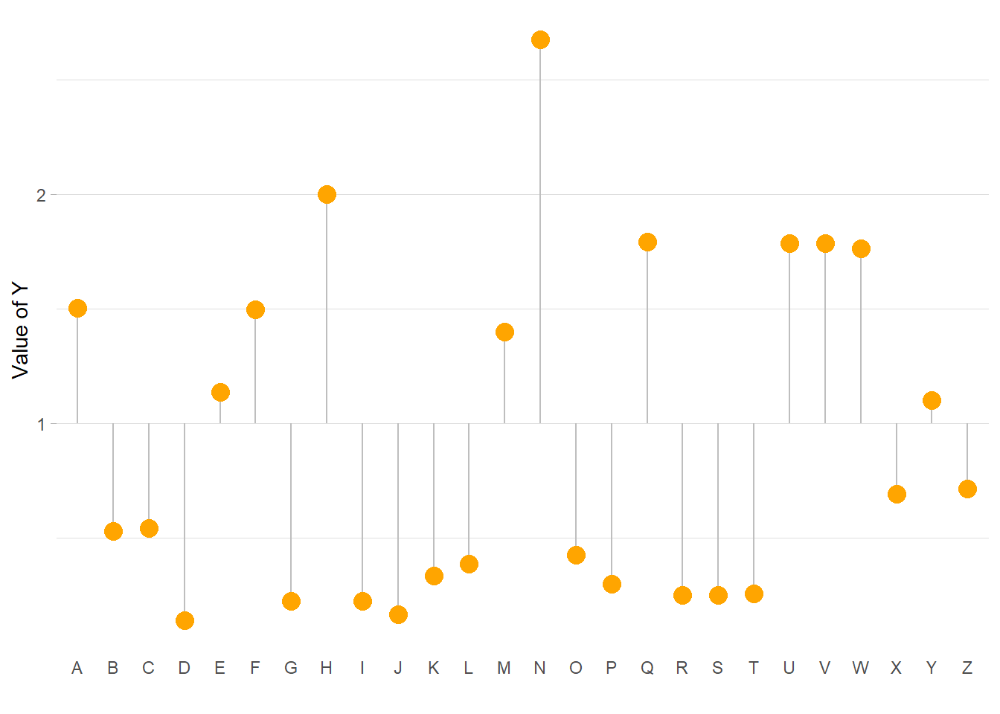
4.5.8 Lollipop Chart with 2 Groups
A lollipop chart can be used to compare 2 categories, linking them with a segment to stress out their difference. This section explains how to do it with R and ggplot2.
Lollipop plots can be very appropriate when it comes to compare 2 values for several entities. For each entity, one point is drawn for each variable, with a different color. Their difference is then highlighted using a segment. This type of visualisation is also called Cleveland dot plots.
As usual, it is advised to order your individuals by mean, median, or group difference to give even more insight to the figure.
# Library
library(ggplot2)
library(dplyr)
library(hrbrthemes)
# Create data
value1 <- abs(rnorm(26))*2
data <- data.frame(
x=LETTERS[1:26],
value1=value1,
value2=value1+1+rnorm(26, sd=1)
)
# Reorder data using average? Learn more about reordering in chart #267
data <- data %>%
rowwise() %>%
mutate( mymean = mean(c(value1,value2) )) %>%
arrange(mymean) %>%
mutate(x=factor(x, x))
# Plot
ggplot(data) +
geom_segment( aes(x=x, xend=x, y=value1, yend=value2), color="grey") +
geom_point( aes(x=x, y=value1), color=rgb(0.2,0.7,0.1,0.5), size=3 ) +
geom_point( aes(x=x, y=value2), color=rgb(0.7,0.2,0.1,0.5), size=3 ) +
coord_flip()+
theme_ipsum() +
theme(
legend.position = "none",
) +
xlab("") +
ylab("Value of Y")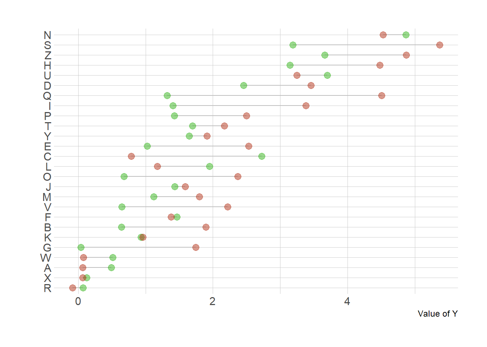
4.5.9 Highlight a Group in a Lollipop Chart
This section describes how to build a lollipop chart with R and ggplot2. It shows how to highlight one or several groups of interest to convey your message more efficiently.
Annotation is key in data visualization: it allows the reader to focus on the main message you want to convey. If one or a few groups specifically interest you, it is a good practice to highlight them on the plot. Your reader will understand quicker what the story behind the chart is.
To do so, you can use an ifelse statement to change size, color, alpha or any other aesthetics. Moreover, it is even more insightful to add text annotation directly on the chart.
Learn more about ggplot2 annotation here and more generally in the ggplot2 section.
# Library
library(ggplot2)
library(dplyr)
library(hrbrthemes)
# Create data
set.seed(1000)
data <- data.frame(
x=LETTERS[1:26],
y=abs(rnorm(26))
)
# Reorder the data
data <- data %>%
arrange(y) %>%
mutate(x=factor(x,x))
# Plot
p <- ggplot(data, aes(x=x, y=y)) +
geom_segment( aes(x=x, xend=x, y=0, yend=y ), color=ifelse(data$x %in% c("A","D"), "orange", "grey"), size=ifelse(data$x %in% c("A","D"), 1.3, 0.7) ) +
geom_point( color=ifelse(data$x %in% c("A","D"), "orange", "grey"), size=ifelse(data$x %in% c("A","D"), 5, 2) ) +
theme_ipsum() +
coord_flip() +
theme(
legend.position="none"
) +
xlab("") +
ylab("Value of Y") +
ggtitle("How did groups A and D perform?")
# Add annotation
p + annotate("text", x=grep("D", data$x), y=data$y[which(data$x=="D")]*1.2,
label="Group D is very impressive",
color="orange", size=4 , angle=0, fontface="bold", hjust=0) +
annotate("text", x = grep("A", data$x), y = data$y[which(data$x=="A")]*1.2,
label = paste("Group A is not too bad\n (val=",data$y[which(data$x=="A")] %>% round(2),")",sep="" ) ,
color="orange", size=4 , angle=0, fontface="bold", hjust=0) 4.5.10 Lollipop Chart with Conditional Color
If your lollipop plot goes on both side of an interesting threshold, you probably want to change the color of its components conditionally. Here is how using R and ggplot2.
4.5.10.1 Marker
Here is the process to use conditional color on your ggplot2 chart:
4.5.10.2 Marker
Here is the process to use conditional color on your ggplot2 chart:
- Add a new column to your dataframe specifying if you are over or under the threshold (use an
ifelsestatement). - Give this column to the
coloraesthetic.
# library
library(ggplot2)
library(dplyr)
# Create data (this takes more sense with a numerical X axis)
x <- seq(0, 2*pi, length.out=100)
data <- data.frame(
x=x,
y=sin(x) + rnorm(100, sd=0.2)
)
# Add a column with your condition for the color
data <- data %>%
mutate(mycolor = ifelse(y>0, "type1", "type2"))
# plot
ggplot(data, aes(x=x, y=y)) +
geom_segment( aes(x=x, xend=x, y=0, yend=y, color=mycolor), size=1.3, alpha=0.9) +
theme_light() +
theme(
legend.position = "none",
panel.border = element_blank(),
) +
xlab("") +
ylab("Value of Y")4.6 Circular Barplot
This is the circular barplot section of the gallery, a variation of the well known barplot. Note that even if visually appealing, circular barplot must be used with care since groups do not share the same Y axis. It is very adapted for cyclical data though. Visit data-to-viz.com for more info.
4.6.0.1 Step by Step
Here is a set of examples leading to a proper circular barplot, step by step. The first most basic circular barchart shows how to use coord_polar() to make the barchart circular. Next examples describe the next steps to get a proper figure: gap between groups, labels and customization.
4.6.1 Most Basic Circular Barplot
A circular barplot is a barplot where bars are displayed along a circle instead of a line. This section explains how to build a basic version with R and ggplot2. It provides the reproducible code and explain how the coord_polar() function works.
A circular barplot is a barplot where bars are displayed along a circle instead of a line. The input dataset is the same than for a barplot: we need one numeric value per group (one group = one bar). (See more explanation in the barplot section).
Basically, the method is the same than to do a classic barplot. At the end, we call coord_polar() to make the chart circular. Note that the ylim() argument is really important. If it starts at 0, the bars will start from the centre of the circle. If you provide a negative value, a white circle space will appear!
This chart is not really insightful, go to the next example to learn how to add labels!
# Libraries
library(tidyverse)
# Create dataset
data <- data.frame(
id=seq(1,60),
individual=paste( "Mister ", seq(1,60), sep=""),
value=sample( seq(10,100), 60, replace=T)
)
# Make the plot
p <- ggplot(data, aes(x=as.factor(id), y=value)) + # Note that id is a factor. If x is numeric, there is some space between the first bar
# This add the bars with a blue color
geom_bar(stat="identity", fill=alpha("blue", 0.3)) +
# Limits of the plot = very important. The negative value controls the size of the inner circle, the positive one is useful to add size over each bar
ylim(-100,120) +
# Custom the theme: no axis title and no cartesian grid
theme_minimal() +
theme(
axis.text = element_blank(),
axis.title = element_blank(),
panel.grid = element_blank(),
plot.margin = unit(rep(-2,4), "cm") # This remove unnecessary margin around plot
) +
# This makes the coordinate polar instead of cartesian.
coord_polar(start = 0)
p
4.6.2 Add Labels to Circular Barplot
This section explains how to add labels on a ggplot2 circular barchart, on top of each bar. It follows the previous most basic circular barchart.
The chart #295 explains how to make a basic circular barplot. The next step is to add labels to each bar, to give insight to the graphic.
Here I suggest a method to add label at the top of each bar, using the same angle that the central part of the bar. In the code below, a short section creates a dataframe with the feature of each label, that we can then call in geom_text().
Note that labels are always in an angle that allows to read them easily, what requires a 180 degrees flip for some of them.
# Libraries
library(tidyverse)
# Create dataset
data <- data.frame(
id=seq(1,60),
individual=paste( "Mister ", seq(1,60), sep=""),
value=sample( seq(10,100), 60, replace=T)
)
# ----- This section prepare a dataframe for labels ---- #
# Get the name and the y position of each label
label_data <- data
# calculate the ANGLE of the labels
number_of_bar <- nrow(label_data)
angle <- 90 - 360 * (label_data$id-0.5) /number_of_bar # I substract 0.5 because the letter must have the angle of the center of the bars. Not extreme right(1) or extreme left (0)
# calculate the alignment of labels: right or left
# If I am on the left part of the plot, my labels have currently an angle < -90
label_data$hjust<-ifelse( angle < -90, 1, 0)
# flip angle BY to make them readable
label_data$angle<-ifelse(angle < -90, angle+180, angle)
# ----- ------------------------------------------- ---- #
# Start the plot
p <- ggplot(data, aes(x=as.factor(id), y=value)) + # Note that id is a factor. If x is numeric, there is some space between the first bar
# This add the bars with a blue color
geom_bar(stat="identity", fill=alpha("skyblue", 0.7)) +
# Limits of the plot = very important. The negative value controls the size of the inner circle, the positive one is useful to add size over each bar
ylim(-100,120) +
# Custom the theme: no axis title and no cartesian grid
theme_minimal() +
theme(
axis.text = element_blank(),
axis.title = element_blank(),
panel.grid = element_blank(),
plot.margin = unit(rep(-1,4), "cm") # Adjust the margin to make in sort labels are not truncated!
) +
# This makes the coordinate polar instead of cartesian.
coord_polar(start = 0) +
# Add the labels, using the label_data dataframe that we have created before
geom_text(data=label_data, aes(x=id, y=value+10, label=individual, hjust=hjust), color="black", fontface="bold",alpha=0.6, size=2.5, angle= label_data$angle, inherit.aes = FALSE )
p
4.6.3 Circular Barplot with Groups
This section explains how to build a circular barchart with groups. A gap is added between groups to highlight them. Bars are labeled, group names are annotated
4.6.3.1 Add a Gap in the Circle
A circular barplot is a barplot where bars are displayed along a circle instead of a line. This page aims to teach you how to make a circular barplot with groups.
Since this kind of chart is a bit tricky, I strongly advise to understand graph #295 and #296 that will teach you the basics.
The first step is to build a circular barplot with a break in the circle. Actually, I just added a few empty lines at the end of the initial data frame:
# library
library(tidyverse)
# Create dataset
data <- data.frame(
individual=paste( "Mister ", seq(1,60), sep=""),
value=sample( seq(10,100), 60, replace=T)
)
# Set a number of 'empty bar'
empty_bar <- 10
# Add lines to the initial dataset
to_add <- matrix(NA, empty_bar, ncol(data))
colnames(to_add) <- colnames(data)
data <- rbind(data, to_add)
data$id <- seq(1, nrow(data))
# Get the name and the y position of each label
label_data <- data
number_of_bar <- nrow(label_data)
angle <- 90 - 360 * (label_data$id-0.5) /number_of_bar # I substract 0.5 because the letter must have the angle of the center of the bars. Not extreme right(1) or extreme left (0)
label_data$hjust <- ifelse( angle < -90, 1, 0)
label_data$angle <- ifelse(angle < -90, angle+180, angle)
# Make the plot
p <- ggplot(data, aes(x=as.factor(id), y=value)) + # Note that id is a factor. If x is numeric, there is some space between the first bar
geom_bar(stat="identity", fill=alpha("green", 0.3)) +
ylim(-100,120) +
theme_minimal() +
theme(
axis.text = element_blank(),
axis.title = element_blank(),
panel.grid = element_blank(),
plot.margin = unit(rep(-1,4), "cm")
) +
coord_polar(start = 0) +
geom_text(data=label_data, aes(x=id, y=value+10, label=individual, hjust=hjust), color="black", fontface="bold",alpha=0.6, size=2.5, angle= label_data$angle, inherit.aes = FALSE )
p
4.6.4 Space between Groups
This concept can now be used to add space between each group of the dataset. Added n lines with only NA at the bottom of each group.
This chart is far more insightful since it allows one to quickly compare the different groups, and to compare the value of items within each group.
# library
library(tidyverse)
# Create dataset
data <- data.frame(
individual=paste( "Mister ", seq(1,60), sep=""),
group=c( rep('A', 10), rep('B', 30), rep('C', 14), rep('D', 6)) ,
value=sample( seq(10,100), 60, replace=T)
)
# Set a number of 'empty bar' to add at the end of each group
empty_bar <- 4
to_add <- data.frame( matrix(NA, empty_bar*nlevels(data$group), ncol(data)) )
colnames(to_add) <- colnames(data)
to_add$group <- rep(levels(data$group), each=empty_bar)
data <- rbind(data, to_add)
data <- data %>% arrange(group)
data$id <- seq(1, nrow(data))
# Get the name and the y position of each label
label_data <- data
number_of_bar <- nrow(label_data)
angle <- 90 - 360 * (label_data$id-0.5) /number_of_bar # I substract 0.5 because the letter must have the angle of the center of the bars. Not extreme right(1) or extreme left (0)
label_data$hjust <- ifelse( angle < -90, 1, 0)
label_data$angle <- ifelse(angle < -90, angle+180, angle)
# Make the plot
p <- ggplot(data, aes(x=as.factor(id), y=value, fill=group)) + # Note that id is a factor. If x is numeric, there is some space between the first bar
geom_bar(stat="identity", alpha=0.5) +
ylim(-100,120) +
theme_minimal() +
theme(
legend.position = "none",
axis.text = element_blank(),
axis.title = element_blank(),
panel.grid = element_blank(),
plot.margin = unit(rep(-1,4), "cm")
) +
coord_polar() +
geom_text(data=label_data, aes(x=id, y=value+10, label=individual, hjust=hjust), color="black", fontface="bold",alpha=0.6, size=2.5, angle= label_data$angle, inherit.aes = FALSE )
p
4.6.5 Order Bars
Here observations are sorted by bar height within each group. It can be useful if your goal is to understand what are the highest / lowest observations within and across groups.
The method used to order groups in ggplot2 is extensively described in this dedicated page. Basically, you just have to add the following piece of code right after the data frame creation:
# Order data:
data = data %>% arrange(group, value)
4.6.6 Circular Barchart Customization
Last but not least, it is highly advisable to add some customisation to your chart. Here we add group names (A, B, C and D), and we add a scale to help compare the sizes of the bars.
# library
library(tidyverse)
# Create dataset
data <- data.frame(
individual=paste( "Mister ", seq(1,60), sep=""),
group=c( rep('A', 10), rep('B', 30), rep('C', 14), rep('D', 6)) ,
value=sample( seq(10,100), 60, replace=T)
)
# Set a number of 'empty bar' to add at the end of each group
empty_bar <- 3
to_add <- data.frame( matrix(NA, empty_bar*nlevels(data$group), ncol(data)) )
colnames(to_add) <- colnames(data)
to_add$group <- rep(levels(data$group), each=empty_bar)
data <- rbind(data, to_add)
data <- data %>% arrange(group)
data$id <- seq(1, nrow(data))
# Get the name and the y position of each label
label_data <- data
number_of_bar <- nrow(label_data)
angle <- 90 - 360 * (label_data$id-0.5) /number_of_bar # I substract 0.5 because the letter must have the angle of the center of the bars. Not extreme right(1) or extreme left (0)
label_data$hjust <- ifelse( angle < -90, 1, 0)
label_data$angle <- ifelse(angle < -90, angle+180, angle)
# prepare a data frame for base lines
base_data <- data %>%
group_by(group) %>%
summarize(start=min(id), end=max(id) - empty_bar) %>%
rowwise() %>%
mutate(title=mean(c(start, end)))
# prepare a data frame for grid (scales)
grid_data <- base_data
grid_data$end <- grid_data$end[ c( nrow(grid_data), 1:nrow(grid_data)-1)] + 1
grid_data$start <- grid_data$start - 1
grid_data <- grid_data[-1,]
# Make the plot
p <- ggplot(data, aes(x=as.factor(id), y=value, fill=group)) + # Note that id is a factor. If x is numeric, there is some space between the first bar
geom_bar(aes(x=as.factor(id), y=value, fill=group), stat="identity", alpha=0.5) +
# Add a val=100/75/50/25 lines. I do it at the beginning to make sur barplots are OVER it.
geom_segment(data=grid_data, aes(x = end, y = 80, xend = start, yend = 80), colour = "grey", alpha=1, size=0.3 , inherit.aes = FALSE ) +
geom_segment(data=grid_data, aes(x = end, y = 60, xend = start, yend = 60), colour = "grey", alpha=1, size=0.3 , inherit.aes = FALSE ) +
geom_segment(data=grid_data, aes(x = end, y = 40, xend = start, yend = 40), colour = "grey", alpha=1, size=0.3 , inherit.aes = FALSE ) +
geom_segment(data=grid_data, aes(x = end, y = 20, xend = start, yend = 20), colour = "grey", alpha=1, size=0.3 , inherit.aes = FALSE ) +
# Add text showing the value of each 100/75/50/25 lines
annotate("text", x = rep(max(data$id),4), y = c(20, 40, 60, 80), label = c("20", "40", "60", "80") , color="grey", size=3 , angle=0, fontface="bold", hjust=1) +
geom_bar(aes(x=as.factor(id), y=value, fill=group), stat="identity", alpha=0.5) +
ylim(-100,120) +
theme_minimal() +
theme(
legend.position = "none",
axis.text = element_blank(),
axis.title = element_blank(),
panel.grid = element_blank(),
plot.margin = unit(rep(-1,4), "cm")
) +
coord_polar() +
geom_text(data=label_data, aes(x=id, y=value+10, label=individual, hjust=hjust), color="black", fontface="bold",alpha=0.6, size=2.5, angle= label_data$angle, inherit.aes = FALSE ) +
# Add base line information
geom_segment(data=base_data, aes(x = start, y = -5, xend = end, yend = -5), colour = "black", alpha=0.8, size=0.6 , inherit.aes = FALSE ) +
geom_text(data=base_data, aes(x = title, y = -18, label=group), hjust=c(1,1,0,0), colour = "black", alpha=0.8, size=4, fontface="bold", inherit.aes = FALSE)
p
4.6.7 Circular Stacked Barplot
A circular barplot is a barplot where bars are displayed along a circle instead of a line. This page aims to teach you how to make a grouped and stacked circular barplot with R and ggplot2.
A circular barplot is a barplot where bars are displayed along a circle instead of a line. This page aims to teach you how to make a grouped and stacked circular barplot. I highly recommend to visit graph #295, #296 and #297 Before diving into this code, which is a bit rough.
I tried to add as many comments as possible in the code, and thus hope that the method is understandable. If it is not, please comment and ask supplementary explanations.
You first need to understand how to make a stacked barplot with ggplot2. Then understand how to properly add labels, calculating the good angles, flipping them if necessary, and adjusting their position. The trickiest part is probably the one allowing to add space between each group. All these steps are described one by one in the circular barchart section.
# library
library(tidyverse)
library(viridis)
# Create dataset
data <- data.frame(
individual=paste( "Mister ", seq(1,60), sep=""),
group=c( rep('A', 10), rep('B', 30), rep('C', 14), rep('D', 6)) ,
value1=sample( seq(10,100), 60, replace=T),
value2=sample( seq(10,100), 60, replace=T),
value3=sample( seq(10,100), 60, replace=T)
)
# Transform data in a tidy format (long format)
data <- data %>% gather(key = "observation", value="value", -c(1,2))
# Set a number of 'empty bar' to add at the end of each group
empty_bar <- 2
nObsType <- nlevels(as.factor(data$observation))
to_add <- data.frame( matrix(NA, empty_bar*nlevels(data$group)*nObsType, ncol(data)) )
colnames(to_add) <- colnames(data)
to_add$group <- rep(levels(data$group), each=empty_bar*nObsType )
data <- rbind(data, to_add)
data <- data %>% arrange(group, individual)
data$id <- rep( seq(1, nrow(data)/nObsType) , each=nObsType)
# Get the name and the y position of each label
label_data <- data %>% group_by(id, individual) %>% summarize(tot=sum(value))
number_of_bar <- nrow(label_data)
angle <- 90 - 360 * (label_data$id-0.5) /number_of_bar # I substract 0.5 because the letter must have the angle of the center of the bars. Not extreme right(1) or extreme left (0)
label_data$hjust <- ifelse( angle < -90, 1, 0)
label_data$angle <- ifelse(angle < -90, angle+180, angle)
# prepare a data frame for base lines
base_data <- data %>%
group_by(group) %>%
summarize(start=min(id), end=max(id) - empty_bar) %>%
rowwise() %>%
mutate(title=mean(c(start, end)))
# prepare a data frame for grid (scales)
grid_data <- base_data
grid_data$end <- grid_data$end[ c( nrow(grid_data), 1:nrow(grid_data)-1)] + 1
grid_data$start <- grid_data$start - 1
grid_data <- grid_data[-1,]
# Make the plot
p <- ggplot(data) +
# Add the stacked bar
geom_bar(aes(x=as.factor(id), y=value, fill=observation), stat="identity", alpha=0.5) +
scale_fill_viridis(discrete=TRUE) +
# Add a val=100/75/50/25 lines. I do it at the beginning to make sur barplots are OVER it.
geom_segment(data=grid_data, aes(x = end, y = 0, xend = start, yend = 0), colour = "grey", alpha=1, size=0.3 , inherit.aes = FALSE ) +
geom_segment(data=grid_data, aes(x = end, y = 50, xend = start, yend = 50), colour = "grey", alpha=1, size=0.3 , inherit.aes = FALSE ) +
geom_segment(data=grid_data, aes(x = end, y = 100, xend = start, yend = 100), colour = "grey", alpha=1, size=0.3 , inherit.aes = FALSE ) +
geom_segment(data=grid_data, aes(x = end, y = 150, xend = start, yend = 150), colour = "grey", alpha=1, size=0.3 , inherit.aes = FALSE ) +
geom_segment(data=grid_data, aes(x = end, y = 200, xend = start, yend = 200), colour = "grey", alpha=1, size=0.3 , inherit.aes = FALSE ) +
# Add text showing the value of each 100/75/50/25 lines
ggplot2::annotate("text", x = rep(max(data$id),5), y = c(0, 50, 100, 150, 200), label = c("0", "50", "100", "150", "200") , color="grey", size=6 , angle=0, fontface="bold", hjust=1) +
ylim(-150,max(label_data$tot, na.rm=T)) +
theme_minimal() +
theme(
legend.position = "none",
axis.text = element_blank(),
axis.title = element_blank(),
panel.grid = element_blank(),
plot.margin = unit(rep(-1,4), "cm")
) +
coord_polar() +
# Add labels on top of each bar
geom_text(data=label_data, aes(x=id, y=tot+10, label=individual, hjust=hjust), color="black", fontface="bold",alpha=0.6, size=5, angle= label_data$angle, inherit.aes = FALSE ) +
# Add base line information
geom_segment(data=base_data, aes(x = start, y = -5, xend = end, yend = -5), colour = "black", alpha=0.8, size=0.6 , inherit.aes = FALSE ) +
geom_text(data=base_data, aes(x = title, y = -18, label=group), hjust=c(1,1,0,0), colour = "black", alpha=0.8, size=4, fontface="bold", inherit.aes = FALSE)
# Save at png
#ggsave(p, file="output.png", width=10, height=10)
p